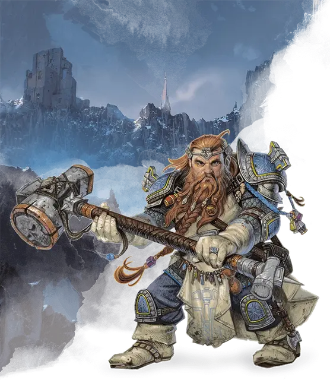

Жрец
Cleric

Кость Хитов 1к8 за каждый уровень жреца
Хиты на 1 уровне 8 + модификатор Телосложения
Хиты на следующих уровнях 1к8 (или 5) + модификатор Телосложения (суммарно минимум 1) за каждый уровень жреца после первого
Доспехи Лёгкие доспехи, средние доспехи, щиты
Оружие Простое оружие
Инструменты Нет
Спасброски Мудрость, Харизма
Навыки Выберите два навыка из следующих: История, Медицина, Проницательность, Религия, Убеждение
Снаряжение Вы начинаете со следующим снаряжением в дополнение к снаряжению, полученному за вашу предысторию:
• а) булава или б) боевой молот (если владеете)
• а) чешуйчатый доспех, б) кожаный доспех или в) кольчуга (если владеете)
• а) лёгкий арбалет и 20 болтов или б) любое простое оружие
• а) набор священника или б) набор путешественника
• Щит и священный символ
Если вы откажетесь от этого снаряжения, а также от предметов, предлагаемых вашей предысторией, то вы начнёте игру с 5к4×10 зм для покупки снаряжения.
| Уровень | Бонус мастерства | Умения | Известные заговоры | Ячейки заклинаний на уровень заклинаний | ||||||||
|---|---|---|---|---|---|---|---|---|---|---|---|---|
| 1 | 2 | 3 | 4 | 5 | 6 | 7 | 8 | 9 | ||||
| 1 | +2 | Использование заклинаний, Божественный домен | 3 | 2 | — | — | — | — | — | — | — | — |
| 2 | +2 | Божественный канал (1/отдых), Умение божественного домена, Праведное восстановление | 3 | 3 | — | — | — | — | — | — | — | — |
| 3 | +2 | — | 3 | 4 | 2 | — | — | — | — | — | — | — |
| 4 | +2 | Увеличение характеристик, Универсальность заговоров | 4 | 4 | 3 | — | — | — | — | — | — | — |
| 5 | +3 | Уничтожение Нежити (ПО ½) | 4 | 4 | 3 | 2 | — | — | — | — | — | — |
| 6 | +3 | Божественный канал (2/отдых), Умение божественного домена | 4 | 4 | 3 | 3 | — | — | — | — | — | — |
| 7 | +3 | — | 4 | 4 | 3 | 3 | 1 | — | — | — | — | — |
| 8 | +3 | Увеличение характеристик, Уничтожение Нежити (ПО 1), Умение божественного доменаБлагословленные удары | 4 | 4 | 3 | 3 | 2 | — | — | — | — | — |
| 9 | +4 | — | 4 | 4 | 3 | 3 | 3 | 1 | — | — | — | — |
| 10 | +4 | Божественное вмешательство | 5 | 4 | 3 | 3 | 3 | 2 | — | — | — | — |
| 11 | +4 | Уничтожение Нежити (ПО 2) | 5 | 4 | 3 | 3 | 3 | 2 | 1 | — | — | — |
| 12 | +4 | Увеличение характеристик | 5 | 4 | 3 | 3 | 3 | 2 | 1 | — | — | — |
| 13 | +5 | — | 5 | 4 | 3 | 3 | 3 | 2 | 1 | 1 | — | — |
| 14 | +5 | Уничтожение Нежити (ПО 3) | 5 | 4 | 3 | 3 | 3 | 2 | 1 | 1 | — | — |
| 15 | +5 | — | 5 | 4 | 3 | 3 | 3 | 2 | 1 | 1 | 1 | — |
| 16 | +5 | Увеличение характеристик | 5 | 4 | 3 | 3 | 3 | 2 | 1 | 1 | 1 | — |
| 17 | +6 | Уничтожение Нежити (ПО 4), Умение божественного домена | 5 | 4 | 3 | 3 | 3 | 2 | 1 | 1 | 1 | 1 |
| 18 | +6 | Божественный канал (3/отдых) | 5 | 4 | 3 | 3 | 3 | 3 | 1 | 1 | 1 | 1 |
| 19 | +6 | Увеличение характеристик | 5 | 4 | 3 | 3 | 3 | 3 | 2 | 1 | 1 | 1 |
| 20 | +6 | Улучшение божественного вмешательства | 5 | 4 | 3 | 3 | 3 | 3 | 2 | 2 | 1 | 1 |
Описание
Воздев руки и глаза к небу и запев молитву, эльф начинает сиять внутренним светом, который проливается на боевых товарищей и лечит их. Распевая песнь славы, дварф широко размахивает своим топором, прорубаясь через ряды орков, выступивших против него, крича хвалу богам с каждым павшим врагом.
Посылая проклятье на силы нежити, женщина поднимает свой священный символ, из которого льётся свет, отбрасывающий зомби, толпящихся около её спутников.
Жрецы являются посредниками между миром смертных и далёкими мирами богов. Настолько же разные, насколько боги, которым они служат, жрецы воплощают работу своих божеств. В отличие от обычного проповедника, жрец наделён божественной магией.
Использовать TCE
Создание персонажа
Целители и воители
Божественная магия, как следует из названия, является силой богов, источающейся из них в мир. Жрецы являются проводниками этой энергии, проявляющейся в виде чудотворных эффектов. Боги не дают такую власть всем, кто обращается к ним, но только тем, кто избран выполнять высокое призвание.
Использующие божественную магию не полагаются на обучение или тренировки. Жрец может разучить шаблонные молитвы и древние ритуалы, но способность читать заклинания зависит от преданности и интуитивного ощущения воли божества.
Жрецы сочетают полезную магию исцеления и вдохновения союзников с заклинаниями, которые вредят и препятствуют врагам. Они могут вызвать страх и ужас, наложить проклятье или болезни, отравить, и даже призвать пламя с небес, чтобы уничтожить своих противников. Встретившись с грешниками, которым поможет только удар булавой по голове, жрецы полагаются на свою боевую подготовку, что позволяет им вступить в ближний бой с силами богов на своей стороне.
Божественные посредники
Не каждый послушник или священнослужитель в храме или святилище является жрецом. Некоторые проповедники призваны к простой жизни служащего в храме, выполняя волю своих богов посредством молитвы и жертв, а не с помощью магии и силы оружия. В некоторых городах духовенство занимает политические должности, или рассматривается как трамплин для более высоких должностей, и вообще не общаются с богом. Истинные жрецы — редкость в большинстве иерархий.
Если жрец обращается к жизни искателя приключений, то, как правило, из-за того, что его бог требует этого. Преследуя цели богов, часто попадаешь в опасные ситуации вне стен цивилизаций, приходится карать зло и искать святые реликвии в древних гробницах. Многие жрецы также должны защищать последователей своих божеств, что может означать сражение с неистовыми орками, ведение переговоров о мире между воюющими государствами, или закрытие портала, через который в мир может пройти князь демонов. Большинство странствующих жрецов поддерживает некоторую связь с храмами и орденами, разделяющими их веру. Храм может попросить помощи у жреца, а высший священник вправе просто потребовать её.
Создание жреца
Если вы создаёте жреца, важно определить, какому божеству вы служите, и какие принципы воплощает ваш персонаж. Приложение Б Книги Игрока включает список множества богов мультивселенной. Посоветуйтесь с Мастером, чтобы узнать, какие божества есть в вашей кампании.
Как только вы выбрали божество, определитесь с отношением вашего жреца с этим богом. Стали ли вы его служителем добровольно? Или бог сам выбрал вас, принуждая к служению и не считаясь с вашими пожеланиями? Как священники в храмах вашей веры воспринимают вас: как героя или нарушителя порядка? Каковы ваши конечные цели? Есть ли у вашего божества специальное поручение для вас? Или вы стремитесь доказать себе, что вы достойны великих достижений?
Быстрое создание
Вы можете быстро создать жреца, следуя этим рекомендациям. Во-первых, у вашей Мудрости должно быть наивысшее значение. Следующей по величине характеристикой должна быть Сила или Телосложение. Во-вторых, выберите предысторию «прислужник».
Углублённая предыстория Жреца (XGE)
Почти все существа, почитающие божеств, проживают свою жизнь, будучи никогда не затронутыми божественной сущностью. Таким образом, они никогда не смогут узнать, каково это — быть жрецом — тем, кто не только является благочестивым священнослужителем, но и наделён толикой силы своего божества.
Давний предмет дебатов: становится ли смертный жрецом в результате своей преданности богу, привлекающей внимание божества? Или же божество само видит в смертном потенциал и призывает его к служению? В конечном счете, возможно, ответ не имеет значения. Как бы то ни было, жрецы появляются и мир нуждается в жрецах, так же, как жрецы и божества нуждаются друг в друге.
Если ваш персонаж жрец, то следующие разделы предлагают вам способы добавить некоторые детали к истории и личности вашего персонажа.
Храм
Большинство жрецов начинают свое богослужение, становясь священниками ордена, и впоследствии понимают, что они были благословлены своим богом для того, чтобы стать жрецами. Чтобы подготовиться к этой новой обязанности, кандидаты получают указание от жреца храма или другого места обучения, посвящённого их божеству.
Некоторые храмы отрезаны от мира, так что их обитатели сосредоточиваются на религиозных обрядах, в то время как другие храмы открыты для служения и излечения страждущих. Подумайте об отличительной черте храма, в котором вы учились.
Храмы
| к6 | Храм |
| 1 | Ваш храм, как говорят, является самым старым из сохранившихся строений, построенных в честь вашего бога |
| 2 | В вашем храме вместе учились прислужники нескольких божеств, схожих по догматам |
| 3 | Вы происходите из храма, который занимается пивоварением. Некоторые говорят, что вы пахнете элем из этого храма |
| 4 | Ваш храм — это крепость и полигон, подготавливающий боевых священников |
| 5 | Ваш храм — это мирное скромное место с огородами и простыми священниками |
| 6 | Вы служили в храме на Внешних Планах |
Дар
Многие жрецы имеют среди личного снаряжения предметы, которые символизируют их веру, напоминают им обеты или иным образом помогают держаться на избранном пути. Несмотря на то, что такой предмет не наполнен божественной силой, он жизненно важен для владельца из-за того, что он представляет.
Дары
| к6 | Дар |
| 1 | Фаланга пальца святого |
| 2 | Книга в металлическом переплёте, рассказывающая, как выслеживать и уничтожать адских созданий |
| 3 | Небольшая безделушка, напоминающий о смиренном и всеми любимом наставнике |
| 4 | Косичка, сплетённая из волос с хвоста единорога |
| 5 | Свиток, описывающий, как наилучшим образом избавить мир от некромантов |
| 6 | Рунический камень, по слухам, благословлённый вашим богом |
Тайна
Ни один смертный не свободен от тёмных мыслей или сомнений. Даже жрецы сражаются с тёмными желаниями или запретными влечениями, заставляющими отвернутся от учений своего божества.
Если вы ещё не рассматривали этот аспект своего персонажа, посмотрите в таблицу с примерами некоторых тайн или придумайте свою. Ваша глубокая, темная тайна может включать в себя, ваши прошлые поступки (или текущие), или это может быть связано с тем, как вы относитесь к миру и своей роли в нем.
Тайны
| к6 | Тайна |
| 1 | Вам даёт советы бес. Вы пытаетесь игнорировать существо, но иногда его советы полезны |
| 2 | Вы считаете, после долгих раздумий, что боги — это не что иное, как сверхмогущественные смертные существа |
| 3 | Вы признаёте силу богов, но думаете, что большинство событий происходит по чистой случайности |
| 4 | Несмотря на то, что вы можете использовать божественную магию, вы никогда не ощущали присутствие божественной сущности внутри себя |
| 5 | Вы страдаете от кошмаров, которые, по вашему мнению, посланы вашим богом в качестве наказания за какое-то неведомое согрешение |
| 6 | В периоды отчаяния вы чувствуете, что вы всего лишь игрушка богов, и презираете их отстранённость |
Мультиклассирование
МУЛЬТИКЛАССИРОВАНИЕ И Жрец
Если вы используете опциональное правило по мультиклассированию из «Книги игрока», вот что вам нужно знать при выборе жреца в качестве одного из ваших классов.
Минимальные значения характеристик. Вы должны иметь значение Мудрости не ниже 13, чтобы взять уровень в этом классе или взять уровень другого класса, если вы уже являетесь жрецом.
Получаемые владения. Если жрец не является вашим начальным классом, вот владения, которые вы приобретаете, когда берёте свой первый уровень жреца: лёгкие доспехи, средние доспехи, щиты.
Ячейки заклинаний. Добавьте ваш уровень в классе жреца к соответствующим уровням других классов, чтобы определить доступные ячейки заклинаний.
Уровень 1: Использование заклинаний
1-й уровень, умение жреца
Будучи проводником божественной силы, вы можете накладывать заклинания жреца. Вы найдёте список заклинаний, доступных жрецу в этом разделе: заклинания жреца. Так же правила по использованию заклинаний есть в этой статье: использование заклинаний.
Уровень 1: Заговоры (заклинания 0-го уровня)
На 1-м уровне вы знаете три заговора на свой выбор из списка заклинаний жреца. Вы узнаёте дополнительные заговоры жреца на более высоких уровнях, как показано в колонке «Известные заговоры».
Уровень 1: Подготовка и сотворение заклинаний
Таблица «Жрец» показывает, какое количество ячеек для накладывания заклинаний жреца у вас есть на первом и более высоких уровнях. Для накладывания одного из этих заклинаний вы должны потратить ячейку заклинаний того же уровня или выше, что и само заклинание. Вы восстановите все потраченные ячейки, когда закончите продолжительный отдых.
Вы подготавливаете список заклинаний жреца, доступных для накладывания. При этом вы выбираете количество заклинаний жреца, равное модификатору Мудрости + уровень жреца (минимум одно заклинание). Уровень заклинаний не должен превышать уровень самой высокой имеющейся у вас ячейки заклинаний.
Например, если вы жрец 3-го уровня, то у вас есть четыре ячейки заклинаний 1-го уровня и две ячейки 2-го уровня. При Мудрости 16 ваш список подготовленных заклинаний может включать в себя шесть заклинаний 1-го или 2-го уровня в любой комбинации. Если вы подготовили заклинание 1-го уровня лечение ран [cure wounds], вы можете наложить его, используя ячейку 1-го уровня или ячейку 2-го уровня. Накладывание заклинания не удаляет его из списка подготовленных заклинаний.
Вы можете изменить список подготовленных заклинаний, когда заканчиваете продолжительный отдых. Подготовка нового списка заклинаний жреца требует времени, проведённого в молитвах и медитации: не менее 1 минуты за уровень заклинания для каждого заклинания в вашем списке.
Уровень 1: Базовая характеристика заклинаний
При накладывании заклинаний жрец использует Мудрость. Сила ваших заклинаний исходит от вашей преданности своему божеству. Вы используете Мудрость в случаях, когда заклинание ссылается на базовую характеристику. Кроме того, вы используете модификатор Мудрости при определении Сл спасбросков от ваших заклинаний жреца, и при броске атаки заклинаниями.
Сл спасброска = 8 + ваш бонус мастерства + ваш модификатор Мудрости
Модификатор броска атаки = ваш бонус мастерства + ваш модификатор Мудрости
Уровень 1: Ритуальное колдовство
Вы можете сотворить заклинание жреца как ритуал, если у этого заклинания есть ключевое слово «ритуал», и оно подготовлено вами.
Уровень 1: Фокусировка заклинания
Вы можете использовать священный символ в качестве заклинательной фокусировки для заклинаний жреца.
Уровень 1: Дополнительные заклинания жреца (опционально)
Заклинания из представленного списка расширяют ваш список заклинаний жреца, представленный в «Книге игрока». Список отсортирован по уровню заклинаний, а не по уровню персонажа. Если заклинание может быть наложено как ритуал, то в скобках также будет указано «ритуал».
Уровень 1: Божественный домен
1-й уровень, умение жреца
Выберите один домен, связанный с вашим божеством. Все домены детально рассмотрены в конце описания класса, и каждый содержит примеры божеств, связанных с ним. Ваш выбор даёт вам заклинания домена и другие умения. Он также даёт вам дополнительные способы использования «Божественного канала», когда вы получаете это умение на 2-м уровне, и дополнительные умения на 6-м, 8-м и 17-м уровнях.
Уровень 1: Заклинания домена
У каждого домена есть список заклинаний, которые вы получаете на новых уровнях жреца. Как только вы получаете заклинание домена, оно всегда считается подготовленным и не учитывается при подсчёте количества заклинаний, которые можно подготовить.
Если вы получаете доступ к заклинанию, отсутствующему в списке заклинаний жреца, оно всё равно будет считаться для вас заклинанием жреца.
Уровень 2: Божественный канал
2-й уровень, умение жреца
Вы получаете возможность направлять божественную энергию непосредственно от своего божества, используя её для подпитки магических эффектов. Вы начинаете с двумя такими эффектами: «Изгнание Нежити» и эффектом, определяемым вашим доменом. Некоторые домены дают вам дополнительные эффекты, как только вы получите новые уровни.
Когда вы используете «Божественный канал», вы выбираете, какой эффект создать. Затем вы должны окончить короткий или продолжительный отдых, чтобы использовать «Божественный канал» снова. Некоторые эффекты «Божественного канала» требуют совершить спасбросок. Когда вы используете эффекты такого рода, Сл равна Сл спасброска от ваших заклинаний жреца.
Начиная с 6-го уровня вы можете использовать «Божественный канал» дважды перед отдыхом, а начиная с 18-го уровня вы можете использовать его три раза перед отдыхом: по окончании короткого или продолжительного отдыха вы восстановите все потраченные использования.
Уровень 2: Божественный канал: изгнание нежити
Вы действием демонстрируете свой священный символ и читаете молитву, изгоняющую Нежить. Вся Нежить, которая может видеть или слышать вас в пределах 30 футов, должна совершить спасбросок Мудрости. Если существо провалило спасбросок, оно изгоняется на 1 минуту, или пока не получит урон. Изгнанное существо должно тратить свои ходы, пытаясь уйти от вас как можно дальше, и не может добровольно переместиться в пространство, находящееся в пределах 30 футов от вас. Оно также не может совершать реакции. Действием существо может использовать только Рывок или пытаться освободиться от эффекта, препятствующего его передвижению. Если двигаться некуда, существо может использовать действие Уклонение.
Уровень 2: Праведное восстановление (опционально)
Вы можете использовать «Божественный канал», чтобы подпитать свои заклинания. Бонусным действием вы касаетесь своего священного символа, произносите молитву и возвращаете одну потраченную ячейку заклинаний, уровень которой не превышает половины вашего бонуса мастерства (с округлением в большую сторону). Вы можете использовать это умение количество раз, зависящее от уровня в этом классе: один раз на 2-м уровне, два раза на 6-м уровне, три раза на 18-м уровне. Вы восстанавливаете все потраченные использования после окончания продолжительного отдыха.
Уровень 4: Увеличение характеристик
4-й уровень, умение жреца
При достижении 4-го, 8-го, 12-го, 16-го и 19-го уровней вы можете повысить значение одной из ваших характеристик на 2 или двух характеристик на 1. Как обычно, значение характеристики при этом не должно превысить 20.
Если ваш Мастер разрешает использование черт, вы можете отказаться от преимуществ этого умения при повышении значений характеристик и вместо этого взять черту.
Уровень 4: Универсальность заговоров (опционально)
Каждый раз, когда вы достигаете определённого уровня в этом классе и получаете умение «Увеличение характеристик», вы можете заменить один заговор, полученный умением «Использование заклинаний» этого класса, на другой заговор из списка заклинаний жреца.
Уровень 5: Уничтожение нежити
5-й уровень, умение жреца
Когда Нежить проваливает спасбросок от вашего умения «Изгнание Нежити», существо мгновенно уничтожается, если его показатель опасности не превышает значения, указанного в таблице:
| Уровень жреца | Уничтожается Нежить с ПО... |
| 5 | 1/2 или ниже |
| 8 | 1 или ниже |
| 11 | 2 или ниже |
| 14 | 3 или ниже |
| 17 | 4 или ниже |
Уровень 8: Благословлённые удары (опционально)
Вы благословлены божественной мощью в битве. Когда существо получает урон от вашего заговора или атаки оружием, вы можете дополнительно нанести 1к8 урона излучением. Как только вы нанесёте этот урон, вы не сможете использовать это умение снова до начала вашего следующего хода.
Уровень 10: Божественное вмешательство
10-й уровень, умение жреца
Вы можете воззвать к своему божеству о помощи, когда сильно в этом нуждаетесь. Мольба о помощи совершается действием. Опишите помощь, которую вы ждёте, и киньте процентную кость. Если выпадет число, не превышающее ваш уровень жреца, ваше божество вмешается. Мастер сам выбирает природу вмешательства; подойдёт эффект какого-либо заклинания жреца или заклинания домена.
Если божество вмешивается, вы не можете использовать это умение в течение 7 дней. В противном случае вы можете использовать это умение после продолжительного отдыха. На 20-м уровне ваше воззвание автоматически успешно и не требует проверки.
Подклассы
Домен бури
Боги, чьи портфолио включают домен бури — в том числе Талос, Амберли, Корд, Зебоим, Поглотитель, Зевс и Тор — правят бурями, морями и небесами. Среди них боги грома и молний, боги землетрясений, некоторые боги огня и насилия, физической силы и бесстрашия. В некоторых пантеонах боги этого домена правят другими божествами, и известны скорым судом, заканчивающимся ударом молнии. В пантеонах мореходов боги этого домена являются божествами океана и покровителями моряков. Боги бури отправляют своих жрецов внушать страх простым смертным, либо наставляя людей на праведный путь, либо заставляя их приносить жертвы, чтобы избежать божественного гнева.
заклинания домена бури
Уровень 1: Бонусное владение
Вы осваиваете владение воинским оружием и тяжёлыми доспехами.
Уровень 1: Гнев бури
Вы можете громогласно покарать атакующих. Если существо в пределах 5 футов от вас, которое вы можете видеть, успешно попадает по вам атакой, вы можете реакцией заставить существо совершить спасбросок Ловкости. Существо получает 2к8 урона звуком или электричеством (по вашему выбору), если провалит спасбросок, и половину этого урона если преуспеет. Вы можете использовать это умение количество раз, равное вашему модификатору Мудрости (минимум 1 раз). Вы восстанавливаете все потраченные применения, когда заканчиваете продолжительный отдых.
Уровень 2: Божественный канал: разрушительный гнев
Вы можете использовать «Божественный канал», чтобы овладеть могуществом бури с необузданной свирепостью.
Когда вы совершаете бросок урона звуком или электричеством, вы можете использовать «Божественный канал», чтобы нанести максимальный урон вместо броска.
Уровень 6: Удар грома
Когда вы наносите урон электричеством существу с размером Большое или меньше, вы также можете оттолкнуть его на 10 футов от себя.
Уровень 8: Божественный удар
Вы получаете способность наполнять удары своего оружия божественной энергией. Один раз в каждый свой ход, когда вы попадаете по существу атакой оружием, вы можете причинить цели дополнительный урон звуком 1к8. Когда вы достигаете 14-го уровня, дополнительный урон возрастает до 2к8.
Уровень 17: Рождённый бурей
У вас появляется скорость полёта, равная вашей текущей наземной скорости ходьбы, когда вы не под землёй и не в помещении.
Домен войны
Война имеет много проявлений. Она может сделать героев из обычных людей. Она может быть отчаянной и ужасающей, с проявлениями жестокости и трусости, затмевающими примеры мастерства и бесстрашия. В любом случае, боги войны следят за воинами и вознаграждают за великие свершения. Жрецы таких богов отличаются в битве, вдохновляя остальных сражаться или призывая к насилию в своих молитвах. Среди богов войны есть чемпионы чести и рыцарства (такие как Торм, Хиронеус и Кири-Джолит), а также боги разрушения и мародёрства (такие как Эритнул, Ярость, Груумш и Арес) и боги завоеваний и покорения (такие как Бэйн, Хекстор и Маглубиет). Другие боги войны (такие как Темпус, Ника и Нуада) занимают более нейтральную позицию, содействуя войне во всех её проявлениях и поддерживая воинов в любых обстоятельствах.
заклинания домена войны
| Уровень жреца | Заклинания |
| 1 | божественное благоволение [divine favor], щит веры [shield of faith] |
| 3 | божественное оружие [spiritual weapon], магическое оружие [magic weapon] |
| 5 | духовные стражи [spirit guardians], мантия крестоносца [crusader’s mantle] |
| 7 | каменная кожа [stoneskin], свобода перемещения [freedom of movement] |
| 9 | небесный огонь [flame strike], удержание чудовища [hold monster] |
Уровень 1: Бонусное владение
Вы получаете владение воинским оружием и тяжёлыми доспехами.
Уровень 1: Боевой священник
Ваш бог наделяет вас воодушевлением, когда вы вступаете в битву. Когда вы используете действие Атака, вы можете совершить одну атаку оружием бонусным действием. Вы можете использовать это умение количество раз, равное вашему модификатору Мудрости (минимум 1 раз). Вы восстанавливаете все потраченные использования, когда завершаете продолжительный отдых.
Уровень 2: Божественный канал: направленный удар
Вы можете использовать «Божественный канал», чтобы нанести удар со сверхъестественной точностью. Когда вы совершаете бросок атаки, вы можете использовать «Божественный канал», чтобы получить бонус +10 к броску. Вы можете решить, применять ли это умение, после того как увидите результат броска, но до того как Мастер скажет, попала атака или промахнулась.
Уровень 6: Божественный канал: благословение бога войны
Если существо в пределах 30 футов от вас совершает бросок атаки, вы можете реакцией предоставить этому существу бонус +10 к броску, использовав «Божественный канал». Вы можете решить, применять ли это умение, после того как увидели результат броска, но до того как Мастер скажет, попала атака или промахнулась.
Уровень 8: Божественный удар
Вы получаете способность наполнять удары своего оружия божественной энергией. Один раз в каждый свой ход, когда вы попадаете по существу атакой оружием, вы можете причинить цели дополнительный урон 1к8 того же вида, что и у оружия. Когда вы достигаете 14 уровня, дополнительный урон увеличивается до 2к8.
Уровень 17: Воплощение битвы
Вы получаете сопротивление дробящему, колющему и рубящему урону от немагических атак.
Домен жизни
Домен жизни сосредоточен на трепещущей позитивной энергии — одной из фундаментальных сил вселенной, которая поддерживает жизнь. Боги жизни способствуют жизнеспособности и здоровью, исцеляя больных и раненых, заботясь о нуждающихся, и отгоняя нежить и силы смерти. Почти любое не злое божество может претендовать на влияние в этом домене, особенно божества земледелия (такие как Чонтиа, Аравай и Деметра), боги солнца (такие как Латандер, Пелор и Ра-Хорахти), боги исцеления и выносливости (такие как Ильматер, Мишакаль, Аполлон и Диан Кехт) и боги домашнего очага и общин (такие как Гестия, Хатор и Болдрей).
заклинания домена жизни
Уровень 1: Бонусное владение
Вы получаете владение тяжёлыми доспехами.
Уровень 1: Поборник жизни
Ваши лечащие заклинания становятся более эффективными. Каждый раз, когда вы используете заклинание 1-го уровня или выше, восстанавливающее хиты существу, это существо восстанавливает дополнительно число хитов, равное 2 + уровень заклинания.
Уровень 2: Божественный канал: сохранение жизни
Вы можете использовать «Божественный канал», чтобы лечить тяжёлые ранения. Вы действием демонстрируете свой священный символ и призываете целительную энергию, которая может восстановить число хитов, равное вашему уровню жреца, умноженному на пять. Выберите любых существ в пределах 30 футов от себя и распределите эти хиты между ними. Это умение не может восстановить существу хиты выше половины от его максимума. Вы не можете использовать это умение на Нежити и Конструктах.
Уровень 6: Благословенный целитель
Заклинания лечения, которое вы накладываете на других, также лечат и вас. Когда вы накладываете заклинание 1-го уровня или выше, которое восстанавливает хиты другому существу, вы восстанавливаете себе число хитов, равное 2 + уровень заклинания.
Уровень 8: Божественный удар
Вы получаете способность наполнять удары своего оружия божественной энергией. Один раз в каждый свой ход, когда вы попадаете по существу атакой оружием, вы можете причинить цели дополнительный урон излучением 1к8. Когда вы достигаете 14-го уровня, дополнительный урон возрастает до 2к8.
Уровень 17: Высшее исцеление
Если вы должны бросить одну или несколько костей, чтобы восстановить заклинанием хиты, вы для каждой кости используете максимальное значение. Например, вместо восстановления существу 2к6 хитов, вы восстанавливаете 12.
Домен знаний
Боги знаний — в том числе Огма, Боккоб, Гилеан, Ауреон и Тот — ценят образованность и понимание прежде всего. Некоторые учат собирать знания и делать их доступными в библиотеках и университетах, или развивать практические знания ремёсел и изобретений. Некоторые божества копят знания и хранят их в тайне для себя. А некоторые обещают своим последователям, что они получат огромную власть, если раскроют тайны мультивселенной. Последователи этих богов изучают эзотерические знания, собирают старые фолианты, исследуют тайные уголки земли, и изучают всё, что смогут. Некоторые боги развивают практические знания ремесла и изобретения, в том числе боги-кузнецы Гонд, Реоркс, Онатар, Морадин, Гефест и Гоибниу.
заклинания домена знаний
Уровень 1: Благословение знаний
Вы можете выучить два языка на свой выбор. Вы также получаете владение двумя навыками из следующего списка: История, Магия, Природа, Религия.
Ваш бонус мастерства удваивается для всех проверок характеристик при использовании выбранных навыков.
Уровень 2: Божественный канал: знания веков
Вы можете использовать «Божественный канал», чтобы получить доступ к источнику знаний. Вы действием выбираете навык или инструмент. На 10 минут вы осваиваете владение выбранным навыком или инструментом.
Уровень 6: Божественный канал: чтение мыслей
Вы можете использовать свой «Божественный канал», чтобы читать мысли существ. Затем вы можете использовать доступ к разуму существа, чтобы командовать им.
Выберите действием одно существо, которое вы можете видеть, находящееся в пределах 60 футов от вас. Это существо должно совершить спасбросок Мудрости. Если существо преуспело, вы не можете использовать это умение на нём, пока не завершите продолжительный отдых. Если существо проваливает спасбросок, вы можете прочитать его поверхностные мысли (то, что у него на уме, его текущие эмоции и то, о чём оно активно думает), когда оно находится в пределах 60 футов от вас. Этот эффект длится в течение 1 минуты.
В течение этого времени вы можете действием окончить этот эффект, накладывая на существо заклинание внушение [suggestion], не тратя ячейку заклинания. Цель автоматически проваливает спасбросок от этого заклинания.
Уровень 8: Могущественное колдовство
Вы добавляете модификатор Мудрости к урону, который причиняете заговорами жреца.
Уровень 17: Видения прошлого
После того как вы использовали это умение, вы не можете его использовать повторно, пока не окончите короткий или продолжительный отдых.
Чтение предмета. Удерживая предмет во время медитации, вы получаете видение предыдущего владельца этого предмета. После медитации в течение 1 минуты вы узнаёте, как владелец приобрёл и потерял предмет, а также самое последнее значимое событие с участием предмета и его владельца. Если предмет принадлежал другому существу в недавнем прошлом (в пределах количества дней, равного значению вашей Мудрости), вы можете потратить 1 дополнительную минуту на каждого владельца, чтобы узнать ту же информацию о нём.
Чтение окрестностей. Пока вы медитируете, вы наблюдаете видения последних событий, произошедших в непосредственной близости (комната, улица, туннель, поляна и тому подобное в пределах куба с длиной ребра 50 футов), на протяжении количества прошедших дней, равного значению вашей Мудрости. За каждую минуту медитации вы узнаёте об одном значимом событии, начиная с самого последнего. Значимые события обычно связаны с сильными эмоциями, например, битвами и предательствами, свадьбами и убийствами, родами и похоронами. Однако они могут также включать в себя более обыденные события, которые, тем не менее, важны в текущей ситуации.
Домен обмана
Боги обмана, такие как Тимора, Бешаба, Олидаммара, Странник, Гарл Златоблеск и Локи — интриганы и подстрекатели, которые постоянно бросают вызов принятому порядку среди богов и смертных. Это покровители воров, негодяев, азартных игроков, мятежников и освободителей. Их жрецы представляют разрушительные силы мира, пронзающие гордость, высмеивающие тиранов, крадущие у богатых, освобождающие пленных и попирающие бессмысленные традиции. Прямому противостоянию они предпочитают уловки, проделки, обман и воровство.
заклинания домена обмана
Уровень 1: Благословение обманщика
Вы можете действием коснуться согласного существа, отличного от вас, чтобы позволить ему совершать с преимуществом проверки Ловкости (Скрытность). Это благословение длится 1 час, или пока вы не используете это умение снова.
Уровень 2: Божественный канал: двуличность
Вы можете использовать «Божественный канал», чтобы создать иллюзорную копию себя.
Вы действием создаёте идеальную иллюзию себя, которая существует в течение 1 минуты, или пока вы не потеряете концентрацию (как если бы вы концентрировались на заклинании). Иллюзия появляется в свободном пространстве, которое вы можете видеть в пределах 30 футов от себя. Бонусным действием в свой ход вы можете переместить иллюзию на расстояние до 30 футов в пространство, которое вы можете видеть, но иллюзия должна оставаться в пределах 120 футов от вас. На протяжении действия умения вы можете накладывать заклинания, как если бы вы находились в пространстве иллюзии, но вы должны использовать собственные чувства. Кроме того, когда и вы и ваша иллюзия находитесь в пределах 5 футов от существа, которое может видеть иллюзию, вы совершаете броски атаки по этому существу с преимуществом, так как иллюзия отвлекает его.
Уровень 6: Божественный канал: плащ теней
Вы можете использовать «Божественный канал», чтобы исчезать. Вы действием становитесь невидимым до конца своего следующего хода. Вы становитесь видимым, если атакуете или накладываете заклинание.
Уровень 8: Божественный удар
Вы получаете способность наполнять удары своего оружия ядом — это дар вашего божества. Один раз в каждый свой ход, когда вы попадаете по существу атакой оружием, вы можете причинить цели дополнительный урон ядом 1к8. Когда вы достигаете 14-го уровня, дополнительный урон возрастает до 2к8.
Уровень 17: Улучшенная двуличность
Вы можете создать до четырёх копий себя, вместо одной, когда вы используете «Двуличность». Бонусным действием в свой ход вы можете переместить любое количество копий на 30 футов, максимальная дистанция от вас не должна превышать 120 футов.
Домен природы
Боги природы столь же разнообразны, как и сама дикая природа, от непостижимых богов глубоких лесов (таких как Сильванус, Обад-Хай, Числев, Балинор и Пан) до дружелюбных божеств, отождествляемых с родниками и рощами (таких как Эльдат). Друиды, почитающие природу в целом, могут служить одному из этих божеств, практикуя таинственные обряды и читая почти забытые молитвы на собственном тайном языке. Но многие из этих богов имеют также жрецов, героев, которые выполняют более активную роль в продвижении интересов конкретного бога природы. Эти жрецы могут охотиться на злых чудовищ, портящих лесные угодья, благословлять урожай верующих, или иссушать посевы тех, кто прогневал их богов.
заклинания домена природы
Уровень 1: Послушник природы
Вы изучаете один заговор друида на свой выбор. Этот заговор считается заговором жреца для вас, но он не учитывается в общем количестве известных вам заговоров жреца. Вы также получаете владение одним из следующих навыков: Выживание, Природа, Уход за животными.
Уровень 1: Бонусное владение
Вы получаете владение тяжёлыми доспехами.
Уровень 2: Божественный канал: очарование животных и растений
Вы можете использовать «Божественный канал», чтобы очаровать животных и растения.
Вы действием демонстрируете свой священный символ и называете имя своего божества. Все Звери и Растения, которые могут видеть вас, и находятся в пределах 30 футов от вас, должны совершить спасбросок Мудрости. Если существо провалит спасбросок, оно становится очарованным вами на 1 минуту, или пока не получит урон. Пока существо очаровано, оно дружелюбно к вам и другим существам, которых вы укажете.
Уровень 6: Сдерживание стихий
Когда вы или существо в пределах 30 футов от вас получает урон звуком, кислотой, огнём, холодом или электричеством, вы можете реакцией предоставить существу сопротивление этому урону.
Уровень 8: Божественный удар
Вы получаете способность наполнять удары своего оружия божественной энергией. Один раз в каждый свой ход, когда вы попадаете по существу атакой оружием, вы можете причинить цели дополнительный урон огнём, холодом или электричеством (на ваш выбор) 1к8. Когда вы достигаете 14-го уровня, дополнительный урон возрастает до 2к8.
Уровень 17: Мастер природы
Вы получаете способность командовать животными и растительными существами. Пока существа очарованы вашим умением «Очарование животных и растений», вы можете бонусным действием в свой ход устно указать, что каждое из них будет делать в свой следующий ход.
Домен света
Боги света — в том числе Хельм, Латандер, Фолтус, Бранчала, Серебряное Пламя, Беленус, Аполлон и Ра-Хорахти — представляют идеалы возрождения и обновления, истины, бдительности и красоты, часто используя символ солнца. Некоторые из этих богов сами изображаются как солнце или возничий, ведущий солнце через небо. Другие — как неутомимые часовые, чьи глаза пронзают любую тень и видят любой обман. Некоторые являются божествами красоты и артистизма, которые учат, что искусство — это средство совершенствования души. Жрецы бога света — просветлённые души, исполненные сиянием и силой проницательности своего божества, отгоняющие прочь ложь и испепеляющие тьму.
заклинания домена света
Уровень 1: Дополнительный заговор
Вы изучаете заговор свет [light], если еще не имели его раньше. Этот заговор не учитывается в количестве известных вам заговоров жреца.
Уровень 1: Защищающая вспышка
Вы можете создать божественный свет между собой и атакующим противником. Если вас атакует существо, которое вы видите в пределах 30 футов, вы можете реакцией создать помеху его броску атаки, вызывая перед атакующим вспышку света, до того как он попадёт или промажет. Существа, которые не могут быть ослеплены, обладают иммунитетом к этому умению. Вы можете использовать это умение количество раз, равное вашему модификатору Мудрости (минимум один раз). Вы восстанавливаете все потраченные использования, когда завершаете продолжительный отдых.
Уровень 2: Божественный канал: сияние рассвета
Вы можете использовать «Божественный канал», чтобы призывать солнечный свет, прогоняющий тьму и причиняющий урон излучением врагам.
Вы действием демонстрируете свой священный символ, и вся магическая тьма в пределах 30 футов от вас рассеивается. Кроме того, все враждебные существа в пределах 30 футов от вас должны совершить спасбросок Телосложения. Существа получают урон излучением, равный 2к10 + ваш уровень жреца в случае провала, и половину этого урона в случае успешного спасброска. Существа с полным укрытием от вас не подвержены воздействию.
Уровень 6: Улучшенная вспышка
Вы можете использовать умение «Защищающая вспышка», когда существо, которое вы можете видеть в пределах 30 футов от себя, атакует не вас, а другое существо.
Уровень 8: Могущественное колдовство
Вы добавляете модификатор Мудрости к урону, который причиняете заговорами жреца.
Уровень 17: Корона света
Вы можете действием создать ауру солнечного света, которая существует 1 минуту или пока вы не рассеете её еще одним действием. Вы испускаете яркий свет в радиусе 60 футов и тусклый свет в радиусе еще 30 футов. Ваши противники, находящиеся на ярком свету, совершают с помехой спасброски от любых заклинаний, причиняющих урон огнём или излучением.
Домен смерти
Источник: «Dungeon Master’s Guide»
Хотя этот подкласс официально опубликован в троекнижии, он не относится к числу доступных по умолчанию. Будучи опубликованным в «Руководстве Мастера», этот подкласс затрагивает темы и методы, обычно идущие вразрез с классическим образом искателя приключений. Если вы хотите выбрать этот подкласс, то обсудите эту возможность с вашим Мастером.
Домен смерти сфокусирован вокруг сил, причиняющих смерть, а также негативной энергии, создающей нежить. Такие божества как Чемош, Миркул и Ви Джас — покровители некромантов, рыцарей смерти, личей, владык мумий и вампиров. Боги домена смерти также воплощают убийство (Анубис, Баал и Пайремиус), боль (Иуз и Ловиатар), болезни и яды (Инкабулос, Талона и Моргион), а также подземный мир (Аид и Хель).
заклинания домена смерти
| Уровень жреца | Заклинания |
| 1 | псевдожизнь [false life], луч болезни [ray of sickness] |
| 3 | глухота/слепота [blindness/deafness], луч слабости [ray of enfeeblement] |
| 5 | восставший труп [animate dead], прикосновение вампира [vampiric touch] |
| 7 | усыхание [blight], защита от смерти [death ward] |
| 9 | преграда жизни [antilife shell], облако смерти [cloudkill] |
Уровень 1: Бонусное владение
Вы получаете владение воинским оружием.
Уровень 1: Жнец
Вы изучаете один заговор из школы Некромантии из списка любого класса. Когда вы накладываете заговор школы Некромантии, в обычных условиях нацеливающийся только на одно существо, вы можете нацелиться на двух существ, находящихся в пределах дистанции и при этом в пределах 5 футов друг от друга.
Уровень 2: Божественный канал: касание смерти
Вы можете использовать «Божественный канал» для уничтожения касанием чужой жизненной силы.
Когда вы попадаете по существу рукопашной атакой, вы можете использовать «Божественный канал», чтобы нанести цели дополнительный урон некротической энергией, равный 5 + ваш удвоенный уровень Жреца.
Уровень 6: Неизбежное разрушение
Способность жреца проводить негативную энергию улучшается. Урон некротической энергией, причиняемый вашими заклинаниями Жреца и «Божественным каналом», игнорируют сопротивление урону некротической энергией.
Уровень 8: Божественный удар
Вы получаете способность наполнять удары своего оружия некротической энергией. Один раз в каждый свой ход, когда вы попадаете по существу атакой оружием, вы можете причинить цели дополнительный урон некротической энергией 1к8. Когда вы достигаете 14-го уровня, дополнительный урон возрастает до 2к8.
Уровень 17: Улучшенный жнец
Когда вы накладываете заклинание школы Некромантии с 1-го по 5-й уровень, нацеливающееся только на одно существо, это заклинание может нацелиться на двух существ, находящихся в пределах дистанции и при этом в пределах 5 футов друг от друга. Если заклинание уничтожает материальные компоненты, жрец должен предоставить по полному набору для каждой цели.
Домен магии
Источник: «Sword Coast Adventurer’s Guide»
Магия — это энергия, наполняющая мультивселенную и питающая и разрушение, и созидание. Боги домена Магии отлично знают секреты и возможности волшебства. Для некоторых подобных богов знание магии – великая ответственность, приходящая с пониманием природы реальности. Другие боги Магии видят в ней чистую силу, которая может использоваться владельцем по своему разумению.
Боги этого домена часто связаны со знаниями, как обучение и магические силы идут рука об руку. В Королевствах к богам этого домена относятся Азут и Мистра, наряду с Кореллоном Ларетианом из эльфийского пантеона. В иных мирах к этому домену причастны Геката, Мат Матонви и Изис; троица лунных богов – Солинари, Лунитари и Нуитари в Кринне; Боккоб, Векна и Ви Джас в Грейхоке.
заклинания домена магии
Уровень 1: Начинающий маг
Вы получаете владение навыком Магия и узнаёте два заговора на ваш выбор из списка заклинаний волшебника. Для вас эти заговоры считаются заговорами жреца.
Уровень 2: Божественный канал: ограждение магией
Вы можете использовать «Божественный канал», чтобы оградиться от существ из иных миров.
Вы действием демонстрируете свой священный символ, и один выбранный вами Небожитель, Элементаль, Фея или Исчадие в 30 футах от вас должен совершить спасбросок Мудрости, при условии, что существо вас видит и слышит. Если существо проваливает спасбросок, оно изгоняется на 1 минуту или пока не получит любой урон.
Изгнанное существо должно тратить свои ходы, пытаясь уйти от вас как можно дальше, и не может добровольно переместиться в пространство, находящееся в пределах 30 футов от вас. Оно также не может совершать реакции. Действием существо может использовать только Рывок или пытаться освободиться от эффекта, препятствующее его передвижению. Если двигаться некуда, существо может использовать действие Уклонение.
После 5-го уровня, провалив спасбросок против вашей способности «Ограждения магией», существо изгоняется на 1 минуту (как заклинание изгнание [banishment], концентрация не требуется), если он не находится на своём родном плане и его показатель опасности равен или ниже порога указанного в таблице «Ограждения магией».
Ограждения магией
| Уровень жреца | Изгоняется существо с ПО... |
| 5 | 1/2 или ниже |
| 8 | 1 или ниже |
| 11 | 2 или ниже |
| 14 | 3 или ниже |
| 17 | 4 или ниже |
Уровень 6: Разрушитель заклинаний
При восстановлении хитов союзнику с помощью заклинания 1-го уровня или выше, вы можете так же развеять одно выбранное вами заклинание, наложенное на это существо. Уровень прерываемого заклинания должен быть равен или ниже уровню ячейки целебного заклинания.
Уровень 8: Могущественное КОЛДОВСТВО
Вы добавляете модификатор Мудрости к урону, который причиняете заговорами жреца.
Уровень 17: Мастерство магии
Вы выбираете четыре заклинания из списка заклинаний волшебника, по одному следующих уровней: 6-й, 7-й, 8-й и 9-й. Добавьте их в список доменных заклинаний. Как и все доменные заклинания, они всегда подготовлены и для вас считаются заклинаниями жреца.
Домен кузни
Источник: «Xanathar’s Guide to Everything»
Боги кузницы – покровители ремесленников, работающих с металлом, от скромного кузнеца, обеспечивающего деревню подковами и лезвиями плугов, до великого эльфийского мастера, чьи стрелы с алмазным наконечником из мифрила склоняли лордов демонов.
Боги кузницы учат, что с терпением и упорным трудом даже самый труднообрабатываемый металл может быть превращён из куска руды в красивый предмет. Жрецы этих божеств ищут потерянные силами тьмы предметы, освобождают шахты от орков и открывают редкие и чудесные материалы, необходимые для создания мощных магических предметов.
Последователи этих богов очень гордятся своей работой, они готовы создавать и использовать тяжёлую броню и мощное оружие для их защиты. Божествами этого домена являются Гонд, Реоркс, Онотар, Морадин, Гефест и Гойбхну.
заклинания домена кузни
Уровень 1: Бонусное владение
Вы получаете владение тяжёлыми доспехами и инструментами кузнеца.
Уровень 1: Благословление кузницы
Вы получаете способность наделять магией оружие или доспехи. В конце продолжительного отдыха вы можете коснуться одного немагического предмета, который является доспехом, простым или воинским оружием. До конца вашего следующего продолжительного отдыха или до тех пор пока вы не умрёте, этот объект считается магическим предметом, дающим бонус +1 к КД, если это доспех, или бонус +1 к броскам атаки и урона, если это оружие.
Использовав это умение, вы не можете использовать его повторно до окончания продолжительного отдыха.
Уровень 2: Божественный канал: благословение ремесленника
Вы можете использовать свой «Божественный канал» для создания простых вещей. Вы проводите ритуал длительностью в час, который создаёт немагический предмет, содержащий немного металла: простое или воинское оружие, доспехи, десять боеприпасов, набор инструментов или другой металлический объект. Создание завершается через час, предмет появляется в свободном пространстве по вашему выбору на поверхности в пределах 5 футов от вас.
То, что вы создаёте, может быть чем-то, что стоит не более 100 зм. В рамках этого ритуала вы должны выложить металл, который может содержать монеты, со стоимостью, равной стоимости создаваемого предмета. Металл безвозвратно сливается и превращается в творение в конце ритуала, магически формируя даже неметаллические части творения.
Ритуал может создать дубликат немагического предмета, который содержит металл, такой как ключ, если вы обладаете оригиналом во время ритуала.
Уровень 6: Душа кузницы
Ваше мастерство жреца кузни предоставляет вам особые способности:
- Вы получаете сопротивление огненному урону.
- Когда вы носите тяжёлый доспех, то получаете +1 к КД
Уровень 8: Божественный удар
Вы получаете возможность наполнять свои удары оружием огненной силой кузницы. Один раз в каждый свой ход, когда вы попадаете по существу атакой оружием, вы можете причинить цели дополнительный урон огнём 1к8.
Когда вы достигаете 14-го уровня, дополнительный урон увеличивается до 2к8.
Уровень 17: Святой кузницы и огня
Ваше благословенное сходство с огнём и металлом становится более мощным:
- Вы получаете иммунитет к огненному урону
- Когда вы носите тяжёлые доспехи, вы получаете сопротивление дробящему, колющему и рубящему урону от немагических атак.
Домен упокоения
Источник: «Xanathar’s Guide to Everything»
Боги упокоения следят за границей между жизнью и смертью. Для этих божеств смерть и загробная жизнь являются фундаментальной частью мультивселенной. Нарушение покоя мёртвых для них — ужасный грех.
Божества упокоения: Келемвор, Ви Джас, духи предков Неумирающего Двора, Аид, Анубис и Осирис.
Последователи этих божеств стремятся упокоить блуждающих духов, уничтожить нежить и облегчить страдания умирающих. Их магия также позволяет им временно отсрочить смерть, особенно для человека, у которого ещё есть неоконченные великие дела. Это отсрочка смерти, а не её отмена, потому что смерть в конечном итоге заберёт своё.
заклинания домена упокоения
Уровень 1: Круг смерти
Вы получаете возможность управлять гранью между жизнью и смертью. Если обычно вы должны бросить одну или несколько костей, чтобы заклинанием восстановить хиты существу с 0 хитов, то вместо этого вы используете максимально возможное число, для каждой кости.
Кроме того, вы изучаете заговор уход за умирающим [spare the dying], который не учитывается при подсчёте известных вам заговоров жреца. Для вас он имеет дистанцию 30 футов, и вы можете накладывать его бонусным действием.
Уровень 1: Глаза могилы
Вы получаете возможность иногда ощущать присутствие нежити, существование которой является оскорблением естественного цикла жизни.
Действием вы можете открыть свой разум, чтобы магическим образом обнаружить Нежить. До конца вашего следующего хода вы знаете местоположение любой Нежити в пределах 60 футов от вас, которая не находится за полным укрытием и не защищена от магии прорицания.
Это чувство ничего не позволяет вам узнать о возможностях существа или идентифицировать его. Вы можете использовать это умение количество раз, равное вашему модификатору Мудрости (минимум 1 раз).
Вы восстанавливаете все потраченные применения после окончания продолжительного отдыха.
Уровень 2: Божественный канал: путь к могиле
Вы можете использовать свой «Божественный канал», чтобы пометить жизненную силу другого существа как подлежащую уничтожению.
Действием вы выбираете одно существо, которое вы можете видеть, в пределах 30 футов от вас, проклиная его до конца вашего следующего хода. Когда вы или союзник попадете по проклятому существу атакой, у существа будет уязвимость ко всему урону от атаки, а затем проклятие заканчивается.
Уровень 6: Страж на пороге смерти
Вы получаете возможность препятствовать смерти.
Когда вы или существо, которое вы можете видеть в пределах 30 футов, подвергаются критическому удару, вы можете реакцией превратить этот удар в нормальный удар. Любые эффекты, вызванные критическим ударом, будут отменены.
Вы можете использовать это умение количество раз, равное вашему модификатору Мудрости (минимум 1 раз).
Вы восстанавливаете все потраченные применения, после окончания продолжительного отдыха.
Уровень 8: Могущественное колдовство
Вы добавляете модификатор Мудрости к урону, который вы наносите любым заговором жреца.
Уровень 17: Хранитель душ
Вы можете схватить остатки жизненной силы умирающего и использовать их, чтобы исцелить живых. Когда враг, которого вы можете видеть, умирает в пределах 60 футов от вас, вы или одно существо по вашему выбору, находящееся в пределах 60 футов от вас, восстанавливает количество хитов, равное числу Костей Хитов врага.
Вы можете использовать эту способность, только если вы не являетесь недееспособным. Использовав это умение, вы не можете использовать его повторно до начала вашего следующего хода.
Домен мира
Источник: «Tasha’s Cauldron of Everything»
Задумывались ли эти миролюбивые жрецы о том, что они подрывают святая всех святых — наказание болью за проступки?
-ТАША
Бальзам мира благоухает в сердцах здоровых общин, между дружественными народами и в душах добросердечных людей. Боги мира вдохновляют создания всех видов на урегулирование конфликтов и противостояние тем силам, что пытаются помешать процветанию мира. Вы можете найти примеры некоторых богов, связанных с доменом мира, в таблице «Божества мира».
Жрецы домена мира председательствуют при подписании договоров, и их часто просят быть судьями в спорах. Благословения этих жрецов объединяют людей и помогают им разделять друг с другом тяготы. Их магия поддерживает тех, кто нацелен сражаться за мир.
Божества мира
| Пример божества | Пантеон |
| Ангаррад | Эльфы |
| Берронар Истинно Серебряная | Дварфы |
| Болдрея | Эберрон |
| Гаэрдал Железнорукий | Гномы |
| Паладайн | Сага о Копье |
| Рао | Серый Ястреб |
| Сиролали | Полурослики |
| Эльдат | Забытые Королевства |
Уровень 1: Заклинания домена
Вы получаете заклинания домена согласно таблице «Заклинания домена мира».
Заклинания домена мира
| Уровень жреца | Заклинания |
| 1 | героизм [heroism], убежище [sanctuary] |
| 3 | охраняющая связь [warding bond], подмога [aid] |
| 5 | маяк надежды [beacon of hope], послание [sending] |
| 7 | аура очищения [aura of purity], Отилюков упругий шар [Оtiluke’s resilient sphere] |
| 9 | высшее восстановление [greater restoration], ментальная связь Рэри [Rary’s telepathic bond] |
Уровень 1: Установление мира
Вы получаете владение навыком Проницательность, Выступление или Убеждение (по вашему выбору).
Уровень 1: Ободряющая связь
Вы можете создать укрепляющую связь между существами, которые находятся в мире друг с другом. Действием вы можете выбрать количество согласных существ (целью можете быть и вы), равное вашему бонусу мастерства, которых вы можете видеть в пределах 30 футов от вас. Вы создаёте между этими существами магическую связь, которая длится 10 минут или до тех пор, пока не используете это умение повторно. Пока любое из связанных существ находится в пределах 30 футов от другого, каждое существо может бросить к4 и добавить выпавшее значение к своим броску атаки, проверке характеристики или спасброску. Каждое существо может добавлять к4 не более одного раза за ход.
Вы можете использовать это умение количество раз, равное вашему бонусу мастерства. Вы восстанавливаете все потраченные использования после окончания продолжительного отдыха.
Уровень 2: Божественный канал: Бальзам мира
Вы можете использовать свой «Божественный канал», чтобы сделать само своё присутствие умиротворяющим бальзамом. Действием вы можете передвинуться на любое расстояние вплоть до своей скорости, не провоцируя атак. Когда вы оказываетесь в пределах 5 футов от любого другого существа во время этого действия, вы можете восстановить существу количество хитов, равное 2к6 + ваш модификатор Мудрости (минимум 1 хит). Существо может получить это исцеление только один раз, пока вы совершаете это действие.
Уровень 6: Защитная связь
Связь, которую вы устанавливаете между личностями, помогает им защищать друг друга. Когда существо, связанное вашим умением «Ободряющая связь», должно получить урон, другое связанное с ним существо, находящееся в пределах 30 футов от него, может реакцией телепортироваться в свободное пространство в пределах 5 футов от первого существа, после чего оно получает весь урон, который был предназначен первому существу.
Уровень 8: Могущественное колдовство
Вы добавляете свой модификатор Мудрости к урону, который наносите любыми заговорами жреца.
Уровень 17: Расширенная связь
Преимущества ваших умений «Ободряющая связь» и «Защитная связь» теперь действуют, когда существа находятся в пределах 60 футов друг от друга. Более того, когда существо использует «Защитную связь», оно получает сопротивление урону, получаемому в результате этого умения.
Домен порядка
Источник: «Tasha’s Cauldron of Everything»
Источник: «Guildmasters’ guide to Ravnica»
Наконец-то кто-то придумал целую религию о том, как не нарушать правила.
-ТАША
Домен порядка отражает дисциплину, а также преданность философии или законам и институтам, управляющим обществом. Жрецы порядка сосредоточены на логике и справедливости в служении своим богам, примеры которых приведены в таблице «Божества порядка».
Жрецы порядка веруют, что хорошо продуманные законы создают справедливую иерархию, и те, кого закон избрал для управления, должны ему подчиняться. Те, кто ему подчиняется, должны делать это в меру своих возможностей, и если лидеры не способны оберегать закон, они должны быть заменены. Таким образом, закон сплетает паутину обязательств, которая создает порядок и безопасность в хаотичной мультивселенной.
Божества порядка
| Пример божества | Пантеон |
| Аурион | Эберрон |
| Бэйн, Тир | Забытые Королевства |
| Ви Джас, Фольтус | Серый Ястреб |
| Маджере | Сага о Копье |
Уровень 1: Заклинания домена
Вы получаете заклинания домена согласно таблице «Заклинания домена порядка».
Заклинания домена порядка
Уровень 1: Бонусные владения
Вы получаете владение тяжёлыми доспехами. Вы также получаете владение навыком Запугивание или Убеждение (по вашему выбору).
Уровень 1: Голос авторитета
Вы можете призвать силу закона, чтобы повести союзников в атаку. Когда вы накладываете заклинание на союзника, используя ячейку 1-го уровня и выше, этот союзник может реакцией совершить одну атаку оружием по существу, которое вы можете видеть, по вашему выбору.
Если заклинание затрагивает больше чем одного союзника, вы выбираете, кто из союзников может совершать атаку в данный момент.
Уровень 2: Божественный канал: Требование порядка
Вы можете использовать свой «Божественный канал», чтобы надавить на кого-то.
Действием вы демонстрируете священный символ. Каждое существо по вашему выбору в пределах 30 футов от вас, которое может слышать или видеть вас, должно преуспеть в спасброске Мудрости, иначе будет очаровано вами до окончания вашего следующего хода или до того, как очарованное существо получит урон. При провале спасброска вы также можете заставить любое очарованное существо выронить то, что у него в руках.
Уровень 6: Воплощение закона
Вы становитесь невероятно сильны в применении магической энергии для подчинения других.
Когда вы накладываете заклинание школы Очарования, используя ячейку заклинаний 1-го уровня или выше, со временем накладывания «1 действие», вы можете сменить время накладывания этого заклинания на «1 бонусное действие».
Вы можете использовать это умение количество раз, равное вашему модификатору Мудрости (минимум 1 раз). Вы восстанавливаете все потраченные использования после окончания продолжительного отдыха.
Уровень 8: Божественный удар
Вы получаете способность наделять удары своего оружия божественной энергией. Один раз в каждый свой ход, когда вы попадаете по существу атакой оружием, вы можете дополнительно нанести цели 1к8 урона психической энергией. Когда вы достигаете 14-го уровня, этот урон увеличивается до 2к8.
Уровень 17: Гнев порядка
Враги, которых вы намереваетесь уничтожить, падут перед вами и вашими союзниками. Если вы наносите урон «Божественным ударом» по существу в свой ход, то можете проклясть это существо до начала вашего следующего хода. В следующий раз, когда один из ваших союзников попадет по проклятому существу атакой, цель также получит 2к8 урона психической энергией, после чего проклятие закончится. Вы можете проклясть противника таким способом только один раз за ход.
Домен сумерек
Источник: «Tasha’s Cauldron of Everything»
Не могу поверить, что пишу это, но думаю, что поддержала бы религию, основанную на приятном освещении и вечерних нарядах.
-ТАША
Сумеречный переход от света к темноте часто приносит спокойствие и даже удовольствие, так как рабочий день заканчивается и начинаются часы отдыха. Темнота также может приносить ужасы, но сумеречные божества защищают от них.
Жрецы, служащие божествам, примеры которых можно найти в таблице «Сумеречные божества» приносят утешение тем, кто ищет покой, и защищают их, входя в наступающую темноту, чтобы убедиться, что она утешит, а не повергнет в ужас.
Сумеречные божества
| Пример божества | Пантеон |
| Болдрея | Эберрон |
| Дол Арра | Эберрон |
| Ильматер | Забытые Королевства |
| Йондалла | Полурослики |
| Мишакаль | Сага о копье |
| Селунэ | Забытые Королевства |
| Хельм | Забытые Королевства |
| Целестиан | Серый Ястреб |
Уровень 1: Заклинания домена
1-й уровень, умение домена сумерек
Вы получаете заклинания домена согласно таблице «Заклинания домена сумерек».
Заклинания домена сумерек
Уровень 1: Бонусное владение
Вы получаете владение воинским оружием и тяжёлыми доспехами.
Уровень 1: Глаза ночи
Вы способны видеть сквозь непроглядную тьму. Вы получаете тёмное зрение в пределах 300 футов. На этой дистанции вы можете видеть в тусклом свете так же, как при ярком свете, а в полной темноте — как при тусклом свете.
Действием вы можете магическим образом наделить этим тёмным зрением определённое количество согласных существ, которых вы можете видеть в пределах 10 футов. Количество существ равно вашему модификатору Мудрости (минимум одно существо). Эффект общего тёмного зрения длится 1 час. После того, как вы поделились своим тёмным зрением, вы не можете сделать это вновь, пока не закончите продолжительный отдых или не потратите ячейку заклинаний любого уровня на повторное использование этого умения.
Уровень 1: Благословение бдительности
Ночь научила вас бдительности. Действием вы касаетесь одного существа (включая себя) и даруете ему преимущество на совершение следующего броска инициативы. Это преимущество пропадает сразу после совершения броска или при повторном использовании этого умения.
Уровень 2: Божественный канал: Сумеречное святилище
Вы можете использовать «Божественный канал», чтобы поддержать ваших союзников спокойствием сумерек.
Действием вы демонстрируете свой священный символ, и вас окружает сумеречная сфера. Сфера, наполненная тусклым светом, появляется с центром на вас, её радиус равен 30 футам. Сфера перемещается вместе с вами и существует 1 минуту или до тех пор, пока вы не станете недееспособны или не умрёте. Каждый раз, когда существо (включая вас) оканчивает свой ход в пределах сферы, вы можете даровать этому существу одно из описанных ниже преимуществ:
- Даровать временные хиты в количестве, равном 1к6 + ваш уровень жреца.
- Окончить одно действие эффекта очарования или испуга.
Уровень 6: Шаги ночи
Вы можете использовать мистическую силу ночи, чтобы подняться в воздух. Бонусным действием, когда вы находитесь в тусклом свете или темноте, вы можете магическим образом даровать себе скорость полёта, равную вашей скорости ходьбы, на 1 минуту. Вы можете использовать бонусное действие подобным образом количество раз, равное вашему бонусу мастерства.
Вы восстанавливаете все потраченные использования после окончания продолжительного отдыха.
Уровень 8: Божественный удар
Вы получаете способность наделять удары своего оружия божественной энергией. Один раз в каждый свой ход, когда вы попадаете по существу атакой оружием, вы можете нанести цели дополнительно 1к8 урона излучением. Когда вы достигаете 14-го уровня, этот урон увеличивается до 2к8.
Уровень 17: Сумеречная пелена
Вы призываете сумрак, окутывающий вас защищающим объятьем: вы и ваши союзники, находящиеся в сфере, созданной вашим сумеречным святилищем, получаете укрытие на половину.
Окетра: Домен сплочённости — неофициальный
Источник: «Plane Shift: Amonkhet»
Данный архетип был взят из источника под названием «Plane Shift: Amonkhet». Хоть это сеттинговое дополнение для одного из миров Magic: The Gathering и было выпущено Wizards of the Coast, создателями D&D, оно всё ещё не является официальным. Если вы хотите использовать этот архетип, вам следует посоветоваться с вашим Мастером.
— Господин Финик
Достойные должны знать и уважать всех, кого Бог-Фараон считает достойными, ибо в загробной жизни все будут едины в целях и действиях.
Окетре поручено разъяснить это учение Бога-Фараона, прививая каждому посвящённому добродетель сплочённости. Она превращает детей в послушников только с одной целью: чтобы они были признаны достойными славной загробной жизни. Окетра прививает каждой культуре умение объединяться в единое целое ради достижения этой цели. Она любит использовать поэтические образы для передачи своих идеалов.
Заклинания домена сплочённости
| Уровень жреца | Заклинания |
| 1 | благословение [bless], направленный снаряд [guiding bolt] |
| 3 | охраняющая связь [warding bond], подмога [aid] |
| 5 | мантия крестоносца [crusader’s mantle], маяк надежды [beacon] of hope] |
| 7 | аура жизни [aura of life], страж веры [guardian of faith] |
| 9 | круг силы [circle of power], множественное лечение ран [mass cure wounds] |
Уровень 1: Бонусное владение
Вы получаете владение тяжёлыми доспехами.
Уровень 1: Действие сплочённости
Когда вы совершаете действие Помощь, чтобы, направить атаку союзника, вы можете бонусным действием совершить одну атаку оружием. Вы можете использовать это умение количество раз, равное вашему модификатору Мудрости (минимум 1 раз).
Вы восстанавливаете все потраченные использования после окончания продолжительного отдыха.
Уровень 2: Божественный канал: Сохранение жизни
Вы можете использовать «Божественный канал», чтобы лечить тяжёлые ранения. Вы действием демонстрируете свой священный символ и призываете целительную энергию, которая может восстановить количество хитов, равное вашему уровню жреца, умноженному на пять. Выберите любых существ в пределах 30 футов от себя и распределите эти хиты между ними. Это умение не может восстановить существу хиты выше половины от его максимума. Вы не можете использовать это умение на Нежити и Конструктах.
Уровень 6: Божественный канал: Благословение Окетры
Когда существо в пределах 60 футов от вас совершает бросок атаки, вы можете реакцией дать этому существу бонус +10 к этому броску, используя «Божественный канал». Вы можете сделать это после того, как вы увидите результат броска, но до того, как Мастер скажет, успешен ли этот бросок.
Уровень 8: Божественный удар
Вы получаете способность наделять удары своего оружия божественной энергией. Один раз в каждый свой ход, когда вы попадаете по существу атакой оружием, вы можете дополнительно нанести цели 1к8 урона излучением. Когда вы достигаете 14-го уровня, этот урон возрастает до 2к8.
Уровень 17: Высшее исцеление
Если вы должны бросить одну или несколько костей, чтобы восстановить заклинанием хиты, вы для каждой кости используете максимальное значение. Например, вместо восстановления существу 2к6 хитов вы восстанавливаете 12.
Ронас: Домен силы — неофициальный
Источник: «Plane Shift: Amonkhet»
Данный архетип был взят из источника под названием «Plane Shift: Amonkhet». Хоть это сеттинговое дополнение для одного из миров Magic: The Gathering и было выпущено Wizards of the Coast, создателями D&D, оно всё ещё не является официальным. Если вы хотите использовать этот архетип, вам следует посоветоваться с вашим Мастером.
— Господин Финик
Достойный должен отточить сильное тело, способное противостоять безграничным энергиям загробной жизни.
Ронас должен привить это учение тем, кто войдет в загробную жизнь, но по его мнению сами слова не имеют значения. Силе нельзя научить. Она должна быть развита в ходе практики и тренировок. Ронас демонстрирует это учение своим примером, а не даёт своим ученикам какие-либо академические наставления. Он приглашает жителей Нактамуна встать рядом с Хекмой и наблюдать, как он врывается в пустыню, чтобы сразиться с величайшими ужасами. Он поощряет наблюдение за его неукротимой силой, ибо, хоть жители никогда и не сравнятся с ней, они могут стремиться к подражанию. Он предлагает им тщательно изучать каждое его движение и развивать то, что они в нём видят.
Заклинания домена силы
Уровень 1: Бонусное владение
Вы получаете владение тяжёлыми доспехами.
Уровень 1: Аколит силы
Вы изучаете один заговор друида на свой выбор. Вы также получаете владение одним из следующих навыков: Атлетика, Выживание, Природа, Уход за животными.
Уровень 2: Божественный канал: Свойство силы
Вы можете использовать свой «Божественный канал», чтобы увеличить свою физическую мощь.
Когда вы совершаете бросок атаки, проверку характеристики или спасбросок, используя Силу, вы можете использовать свой «Божественный канал», чтобы получить бонус +10 к этому броску. Вы можете сделать это после того, как вы увидите результат броска, но до того, как Мастер скажет, успешен ли этот бросок.
Уровень 6: Божественный канал: Благословение Ронаса
Когда существо в пределах 30 футов от вас совершает бросок атаки, проверку характеристики или спасбросок, используя Силу, вы можете реакцией дать этому существу бонус +10 к этому броску, используя «Божественный канал». Вы можете сделать это после того, как вы увидите результат броска, но до того, как Мастер скажет, успешен ли этот бросок.
Уровень 8: Божественный удар
Вы получаете способность наделять удары своего оружия божественной энергией. Один раз в каждый свой ход, когда вы попадаете по существу атакой оружием, вы можете дополнительно нанести цели 1к8 урона излучением. Когда вы достигаете 14-го уровня, этот урон возрастает до 2к8.
Уровень 17: Воплощение битвы
Вы получаете сопротивление дробящему, колющему и рубящему урону от немагического оружия.
Бонту: Домен амбиций — неофициальный
Источник: «Plane Shift: Amonkhet»
Данный архетип был взят из источника под названием «Plane Shift: Amonkhet». Хоть это сеттинговое дополнение для одного из миров Magic: The Gathering и было выпущено Wizards of the Coast, создателями D&D, оно всё ещё не является официальным. Если вы хотите использовать этот архетип, вам следует посоветоваться с вашим Мастером.
— Господин Финик
Достойные должны стремиться к величию: превосходство в жизни ведет к превосходству в посмертии.
Бонту полностью приняла это изречение, и, хоть она прилагает мало усилий для наставлений, она подаёт пример. Её визири тонко сажают семена, расцветающие в амбициях Бога-Фараона. Посредством инсинуаций они напоминают как послушникам, так и посвящённым, что достижение своего места в загробной жизни за счёт других не является постыдным, но является доказательством решимости и стремления посвященного. Они предполагают, что нет ничего более важного, чем это стремление: ни узы урожая, ни дружба, ни любовь. Ни даже преданность богу.
Заклинания домена амбиций
Уровень 1: Защищающая вспышка
Вы можете создать божественный свет между собой и атакующим противником. Если вы атакованы видимым вами существом, находящимся в пределах 30 фт., вы можете реакцией создать помеху его броску атаки, вызывая перед атакующим вспышку света, до того как он попадёт или промажет. Существа, которые не могут быть ослеплены, обладают иммунитетом к этому умению.
Вы можете использовать это умение количество раз, равное вашему модификатору Мудрости (минимум один раз). Вы восстанавливаете все потраченные использования, когда завершаете продолжительный отдых.
Уровень 2: Божественный канал: Двуличность
Вы можете использовать «Божественный канал», чтобы создать иллюзорную копию себя. Вы действием создаёте идеальную иллюзию себя, которая существует в течение 1 минуты, или пока вы не потеряете концентрацию (как если бы вы концентрировались на заклинании). Иллюзия появляется в свободном пространстве, которое вы можете видеть в пределах 30 футов от себя.
Бонусным действием в свой ход вы можете переместить иллюзию на расстояние до 30 футов в пространство, которое вы можете видеть, но иллюзия должна оставаться в пределах 120 футов от вас.
На протяжении действия умения вы можете накладывать заклинания, как если бы вы находились в пространстве иллюзии, но вы должны использовать собственные чувства. Кроме того, когда и вы и ваша иллюзия находитесь в пределах 5 футов от существа, которое может видеть иллюзию, вы совершаете броски атаки по этому существу с преимуществом, так как иллюзия отвлекает его.
Уровень 6: Божественный канал: Плащ теней
Вы можете использовать «Божественный канал», чтобы исчезать. Вы действием становитесь невидимым до конца своего следующего хода. Вы становитесь видимым, если атакуете или накладываете заклинание.
Уровень 8: Могущественное колдовство
Вы добавляете свой модификатор Мудрости к урону, который наносите любыми заговорами жреца.
Уровень 17: Улучшенная двуличность
Вы можете создать до четырёх копий себя вместо одной, когда вы используете «Двуличность». Бонусным действием в свой ход вы можете переместить любое количество копий на 30 футов, максимальная дистанция от вас не должна превышать 120 футов.
Хазорет: Домен рвения — неофициальный
Источник: «Plane Shift: Amonkhet»
Данный архетип был взят из источника под названием «Plane Shift: Amonkhet». Хоть это сеттинговое дополнение для одного из миров Magic: The Gathering и было выпущено Wizards of the Coast, создателями D&D, оно всё ещё не является официальным. Если вы хотите использовать этот архетип, вам следует посоветоваться с вашим Мастером.
— Господин Финик
Достойные бросятся на сторону Бога-Фараона с неустанным рвением, поднимаясь, дабы преодолеть все препятствия на своём пути.
Бог-Фараон ожидает, что те, кого он приветствует в загробной жизни, будут желать её превыше всех других удовольствий и достижений и покажут свои преданность, страсть и пыл своими действиями. Хазорет поручено развивать это рвение в посвящённых, которые находятся под её опекой, и она взялась за эту задачу с соответствующим энтузиазмом. Однако она признаёт, что лучший способ научить усердию — это демонстрировать его.
Заклинания домена рвения
Уровень 1: Бонусные владения
Вы получаете владение воинским оружием и тяжёлыми доспехами.
Священник рвения
1-й уровень, умение домена рвения
Хазорет наделяет вас воодушевлением, когда вы вступаете в битву. Когда вы используете действие Атака, вы можете совершить одну атаку оружием бонусным действием. Вы можете использовать это умение количество раз, равное вашему модификатору Мудрости (минимум 1 раз).
Вы восстанавливаете все потраченные использования, когда завершаете продолжительный отдых.
Уровень 2: Божественный канал: Всепоглощающее усердие
Вы можете использовать «Божественный канал», чтобы направить своё рвение в сторону неконтролируемой свирепости. Когда вы совершаете бросок урона звуком или огнём, вы можете использовать «Божественный канал», чтобы нанести максимальный урон вместо броска.
Уровень 6: Удар грома
Когда вы причиняете урон звуком существу с размером Большое или меньше, вы также можете оттолкнуть его на 10 футов от себя.
Уровень 8: Божественный удар
Вы получаете способность наделять удары своего оружия божественной энергией. Один раз в каждый свой ход, когда вы попадаете по существу атакой оружием, вы можете дополнительно нанести цели 1к8 урона излучением. Когда вы достигаете 14 уровня, этот урон возрастает до 2к8.
Уровень 17: Пламя славы
Вы можете на мгновение отсрочить смерть, чтобы совершить последний героический поступок. Когда ваши хиты уменьшены до 0 атакующим, которого вы можете видеть, даже если вы должны быть мгновенно убиты, вы можете реакцией передвинуться со своей скоростью к атакующему и совершить одну рукопашную атаку оружием против него, если ваша скорость позволяет добраться до него.
Вы совершаете эту атаку с преимуществом. Если атака попадает, существо получает дополнительно 5к10 урона огнём и дополнительно 5к10 урона, зависящего от типа оружия. Затем вы как обычно теряете сознание и начинаете совершать спасброски от смерти или умираете, если урон, который вы получили, убил бы вас сразу.
Как только вы воспользуетесь этим умением, вы не сможете использовать его снова, пока не закончите продолжительный отдых.
Домен города — неофициальный
Источник: «Unearthed Arcana Modern Magic»
Данная «Unearthed Arcana» не является актуальной. Этот архетип наверняка уже не реализуют в каких-либо официальных книгах.
— Господин Финик
Домен города связан с гражданами, торговлей, дорожным движением и даже архитектурой современной цивилизации. В глазах жреца города, центр современной жизни — это смысл и дух сообщества, а злейшие враги города — это те, кто стремится нанести вред общему благу его граждан.
Новые заклинания, введённые для домена города находятся здесь: заклинания домена города.
Заклинания жреца города
| Уровень жреца | Заклинания |
| 1 | понимание языков [comprehend languages], удалённый доступ [remote access] |
| 3 | поиск транспорта [find vehicle], раскалённый металл [heat metal] |
| 5 | молния [lightning bolt], защита от баллистики [protection from ballistics] |
| 7 | поиск существа [locate creature], синхронизация [synchronicity] |
| 9 | общение с городом [commune with city], волна излучения [shutdown] |
Уровень 1: Дополнительный заговор
Вы изучаете заговор вкл/выкл [on/off], если еще не имели его раньше. Этот заговор не учитывается в количестве известных вам заговоров жреца.
Уровень 1: Бонусное владение
Вы получаете владение личным оружием и владение транспортом (наземный).
Уровень 1: Сердце города
Вы можете проникнуться духом сообщества, существующим в городе. Пока вы находитесь в пределах любого города, вы можете получить преимущество в одной проверке Харизмы (Обман, Запугивание или Убеждение), и вы будете считаться владеющим соответствующим навыком. Вы можете использовать это умение количество раз, равное вашему модификатору Мудрости (минимум один раз) вы восстанавливаете все потраченные использования, когда оканчиваете продолжительный отдых.
Уровень 2: Божественный канал: Духи города
Божественность призвать город на помощь. Вы действием предъявляете свой святой символ, и любая городская коммуникация в пределах 30 футов от вас либо работает нормально, либо полностью отключается на 1 минуту (на ваш выбор).
Кроме того, каждое враждебное существо в пределах 30 футов от вас должно совершить спасбросок Харизмы. При провале существо сбивается с ног или опутывается (по вашему выбору) из-за таких опасностей, как запутанные провода, извержение воды под высоким давлением из пожарных гидрантов, обрушение тротуара с образованием невидимых выбоин и т. д. Опутанное существо может окончить состояние опутан, совершив успешную проверку Силы (Атлетика) или Ловкости (Акробатика) против Сл ваших заклинаний.
Этот эффект является полностью локальным и влияет только на коммуникации в пределах 30 футов от вас. Определение того, какие коммуникации доступны в пределах дальности и как проявляются физические эффекты этих коммуникаций, остаётся за Мастером.
Уровень 6: Дружина
Ваша внимательность в городе расширяется сверхъестественным образом. Находясь в городской среде, вы считается владеющим навыками Проницательность и Восприятие, и вы добавляете удвоенный бонус мастерства к проверкам Мудрости (Проницательность) и Мудрости (Восприятие) вместо обычного бонуса мастерства.
Уровень 8: Божественный удар
Вы получаете возможность наполнять свои удары оружием психической энергией, заимствованной у жителей вашего города. Один раз в каждый свой ход, когда вы попадаете по существу атакой оружием, вы можете нанести дополнительный 1к8 урона психической энергией. Когда вы достигаете 14-го уровня, дополнительный урон увеличивается до 2к8.
Уровень 17: Экспресс-транзит
Вы можете использовать маршруты общественного транспорта для мгновенного перемещения в другие точки города. Начиная с автобусной остановки, вокзала, станции метро или другого подходящего места общественного транспорта в городе, вы можете телепортироваться на любую другую подобную остановку в городе, как если бы вы наложили заклинание телепортация [teleport], целью которого является круг телепортации, который вам известен. После того, как вы используете это умение, вы должны закончить короткий или продолжительный отдых, прежде чем использовать её снова.
Домен защиты — неофициальный
Источник: «Unearthed Arcana Cleric: Divine Domain»»
Данная «Unearthed Arcana» не является актуальной. Этот архетип наверняка уже не реализуют в каких-либо официальных книгах.
— Господин Финик
Боги домена Защиты воодушевляют своих последователей защищать тех кто слаб, от тех кто силен. Последователи этих божеств обитают в деревнях и городах на границах диких земель, где они помогают организовывать оборону и сражаются со злом. Боги Защиты уверены в том что крепкий щит и прочный доспех – лучшая защита от зла, а на втором месте – кованная булава в сильной руке готовая ответить на любую атаку.
Заклинания домена Защиты
Уровень 1: Дополнительное владение
Вы получаете владение тяжёлыми доспехами.
Уровень 1: Щит Верного
Вы получаете способность защищать других от атак. Когда существо атакует цель на расстоянии 5 футов от вас, вы можете реакцией создать помеху для этой атаки. Для этого вы должны видеть и атакующего и цель. Вы помещаете щит, оружие, руку или другую часть вашего тела между атакующим и целью.
Умение не может быть использовано когда цель атаки – вы.
Уровень 2: Божественный канал: Сверкающая защита
Вы можете потратить использование «Божественного канала», чтобы укрыть своих союзников сверкающей броней. Действием вы проецируете благословенную энергию на союзника, которого вы видите не дальше, чем в 30-ти футах от вас. Энергия окутывает союзника в течении 1 минуты и если за это время он станет целью успешной атаки, атакующий получает 2к10 + ваш уровень жреца урона излучением.
Уровень 6: Благословенный целитель
Заклинания лечения, которые вы накладываете на других, также лечат и вас. Когда вы творите заклинание 1-го уровня или выше, которое восстанавливает хиты другому существу, вы восстанавливаете себе число хитов, равное 2 + уровень заклинания.
Уровень 8: Божественный удар
Вы получаете способность наделять ваши удары божественной силой. Раз в ход, когда вы попадаете по цели, вы можете нанести дополнительный 1к8 урона излучением. На 14-ом уровне урон увеличивается до 2к8.
Уровень 17: Несгибаемая Защита
Вы получаете сопротивление к двум видам урона из следующего списка: дробящий, колющий, рубящий, некротическая энергия и излучение. По окончанию короткого или продолжительного отдыха вы можете изменить тип сопротивления.
Действием вы можете касанием передать сопротивление одному существу. Существо владеет этим сопротивлением до того момента пока вы не завершите короткий или продолжительный отдых. Бонусным действием вы можете вернуть себе это сопротивление.
Домен судьбы — неофициальный
Источник: «Unearthed Arcana: Wonders of the Multiverse»
Боги судьбы видят будущее и то, как выбор, который делают смертные, ведёт их к своей судьбе. Некоторые божества считают будущее предопределенным, в то время как другие понимают мультивселенную как место бесконечных возможностей. Жрецы, черпающие силу из сил судьбы, иногда получают видения непосредственно от своего божества и получают мимолетные предзнаменования будущего. Они делятся невероятными знаниями со своими союзниками и пророчат врагам гибель
| Пример божества | Пантеон |
| Саврас | Забытые Королевства |
| Истус | Серый Ястреб |
| Гилеан | Сага о Копье |
| Лабелас Энорет | Эльфийский |
Уровень 1: Заклинания домена
Вы получаете заклинания домена согласно таблице «Заклинания домена судьбы». Как работают заклинания домена, сказано в «Книге игрока», в описании классового умения «Божественный домен».
Заклинания домена судьбы
| Уровень жреца | Заклинание |
| 1 | диссонирующий шёпот [dissonant whisper], героизм [heroism] |
| 3 | видение невидимого [see invisibility], охраняющая связь [warding bond] |
| 5 | маяк надежды [beacon of hope], подсматривание [clairvoyance] |
| 7 | защита от смерти [death ward], предсказание [divination] |
| 9 | общение [commune], обет [geas] |
Уровень 1: Знамения и предзнаменования
Вы можете видеть признаки будущего в повседневных предметах и событиях, таких как полёты птиц или рябь на воде от брошенного камня. Вы можете наложить заклинание гадание [augury], не тратя ячейку заклинания, и, когда вы накладываете заклинание таким образом, заклинание не требует вербального, соматического и материального компонентов. После того, как вы накладываете заклинание таким образом, вы не сможете сделать это снова, пока не окончите продолжительный отдых.
Кроме того, пока вы не окончите продолжительный отдых, когда вы накладываете заклинание школы Прорицания, которое включает в себя шанс, что Мастер не даст вам ответа или даст случайный ответ — например, гадание [augury], общение [commune] или предсказание [divination] — уменьшите этот шанс на 25 процентов.
Уровень 1: Связующие узы
Вы можете временно связать свою судьбу с другими. Действием вы можете прикоснуться к одному предмету или существу и волшебным образом привязать к нему свою нить судьбы на 1 час или до тех пор, пока вы снова не воспользуетесь этим умением. Несогласное существо должно преуспеть в спасброске Мудрости против Сл спасброска ваших заклинаний, чтобы сопротивляться этому эффекту. Пока цель привязана к вам и находится на том же плане существования, что и вы, вы можете чувствовать направление к местонахождению цели и вы знаете направление её движения, если она передвигается.
Кроме того, один раз в ход, когда вы накладываете заклинание, используя ячейку заклинания, чтобы нанести урон или восстановить хиты цели, бросьте к6, и цель получит дополнительный урон или дополнительное лечение, соответственно, равное выпавшему числу.
Вы можете использовать это умение количество раз, равное вашему бонусу мастерства и вы восстанавливаете все израсходованные использования, когда оканчиваете продолжительный отдых.
Уровень 2: Божественный канал: Нить судьбы
Вы можете использовать свой «Божественный Канал», чтобы видеть и управлять нитями судьбы, сплетающимися вокруг других людей. Бонусным действием вы можете войти в это состояние на срок до 1 минуты или до тех пор, пока не потеряете концентрацию (как если бы вы концентрировались на заклинании). В течение этого времени каждый раз, когда другое существо, которое вы видите, совершает бросок атаки или проверку характеристики, вы можете реакцией дать этому броску преимущество или помеху (по вашему выбору).
Уровень 6: Проницательный удар
Бонусным действием вы можете выбрать одно существо, которое вы можете видеть в пределах 30 футов от себя. Ваша магия дает вам краткое видение защиты цели. До конца вашего следующего хода вы получаете один из следующих эффектов на ваш выбор:
- В следующий раз, когда вы совершаете бросок атаки по цели, бросьте к6 и прибавьте выпавшее число к итогу.
- В следующий раз, когда цель должна совершить спасбросок против наложенного вами заклинания, она должна бросить к6 и вычесть выпавшее число из спасброска.
Вы можете использовать это умение количество раз, равное вашему бонусу мастерства, и вы восстанавливаете все потраченные использования после окончания продолжительного отдыха.
Уровень 8: Могущественное колдовство
Вы добавляете модификатор Мудрости к урону, который причиняете заговорами жреца.
Уровень 17: Видение будущего
Ваше знание будущего позволяет вам направлять человека к достижению максимально возможного успеха. Вы можете наложить заклинание предвидение [foresight] один раз, не тратя ячейку заклинания; когда вы накладываете заклинание таким образом, продолжительность заклинания составляет 1 минуту. После того, как вы накладываете заклинание таким образом, вы не сможете сделать этого снова, пока не окончите продолжительный отдых.
Домен разума — неофициальный
Источник: «Exploring Eberron»
Данный материал был взят из источника под названием «Exploring Eberron», что является продуктом Кита Бейкера, создателя мира Эберрон и официальных книг по этому сеттингу. Хоть этот архетип и был создан уважаемым в кругах D&D человеком, он всё ещё не является официальным. Если вы хотите использовать этот архетип, вам следует посоветоваться с вашим Мастером.
— Господин Финик
Этот путь сочетает в себе божественную преданность и психическую силу. Силы, связанные с доменом Разума, учат последователей, что разум-величайший инструмент и самое могущественное оружие из созданных. Жрец домена Разума учится использовать свою собственную ментальную силу, чтобы использовать её для защиты верующих и поражения врагов.
В Эберроне домен Разума больше всего ассоциируется с Путем Света калаштар и Путем Вдохновлённых риедра. Однако последователи культа дракона глубин также могут следовать по этому пути. В то время как видения Ксориата, безусловно, могут свести жреца с ума, они также могут раскрыть ему более глубокие тайны и ментальные способности.
Уровень 1: Заклинания домена
Вы получаете заклинания домена согласно таблице «Заклинания домена разума”. Как работают заклинания домена, сказано в «Книге игрока», в описании классового умения «Божественный домен».
Уровень 1: Вспышка озарения
Вы можете черпать силу из источника ментальной энергии, находящегося в глубине вас. Когда вы совершаете проверку характеристик, вы можете совершить повторный бросок после того, как увидите результат, но до того, как узнаете, будет ли он успехом или провалом. Вы получаете бонус к этому повторному броску, равный половине вашего уровня Жреца (минимум 1).
Вы можете использовать эту умение дважды. Вы восстанавливаете все израсходованные использования, когда заканчиваете короткий или продолжительный отдых.
Уровень 1: Психическая сила
Вы учитесь поражать своих врагов силой разума. Когда вы накладываете заговор или заклинание жреца, наносящее урон излучением, вы можете заменить этот тип урона на психическую энергию.
Уровень 2: Божественный канал: Психическая обратная связь
Вы можете использовать Божественный канал, чтобы, сокрушить разум врага. Когда существо в радиусе 30 футов от вас должно совершить спасбросок Мудрости, вы можете реакцией создать помеху для этого броска, используя свой «Божественный канал». Вы должны использовать это умение, прежде чем узнаете результат броска.
Если заклинание или эффект, вызвавший спасбросок Мудрости, созданы не вашим заклинанием, то вы можете нанести цели урон психической энергией, равный половине вашего уровня жреца, непосредственно перед тем, как цель совершит свой спасбросок.
Уровень 6: Якорение
Ваша ментальная сила возрастает, и теперь вы способны успокаивать умы окружающих одним своим присутствием.
Всякий раз, когда вы или дружественное существо в радиусе 10 футов от вас должны совершить спасбросок Интеллекта, Мудрости или Харизмы, существо получает бонус +2 к спасброску. Вы должны быть дееспособны, чтобы предоставить этот бонус.
Уровень 8: Могущественное колдовство
Вы добавляете модификатор Мудрости к урону, который наносите заговорами жреца.
Уровень 17: Изменение реальности
Когда вы видите, что союзник в пределах 30 футов от вас проваливает спасбросок, вы можете изменить результат его броска на 20, что потенциально изменит результат. Как только вы воспользуетесь этим умением, вы не можете воспользоваться им снова, пока не закончите короткий или продолжительный отдых.
Домен Верховных владык — неофициальный
Источник: «Morgrave Miscellany»
Данный материал был взят из источника под названием «Morgrave Miscellany», что является продуктом Кита Бейкера, создателя мира Эберрон и официальных книг по этому сеттингу. Хоть этот архетип и был создан уважаемым в кругах D&D человеком, он всё ещё не является официальным. Если вы хотите использовать этот архетип, вам следует посоветоваться с вашим Мастером.
— Господин Финик
Будь то война, буря, сама смерть, у веры нет единого бастиона, и эти отдельные аспекты создают круговорот существования. Вместо того, чтобы ограничивать преданность одному божеству, священнослужитель Верховных Владык охватывает целый пантеон богов и богинь. Когда обнажаются клинки, жрец Верховных владык взывает к богам войны Дол Дорну и Дол Арре. Когда приходит время для переговоров, священник обращается за вдохновением к Кол Коррану.
В то время как некоторые области слегка перекрываются, тот, кто специализируется на омнитеизме, знает нужного Верховного владыку для каждого случая.
Как представитель многих богов, жрец Верховных владык может использовать широкий выбор заклинаний.
Однако это также означает, что простые люди будут обращаться к священнослужителю с самыми разнообразными проблемами. Мародерствующие бандиты? Проклятая кузница? Свадебная церемония? Жрец Верховных владык может справиться со всем этим.
Уровень 1: Священная преданность
Вы получаете владение навыками История и Религия, если вы ими ещё не владели.
Ваш бонус мастерства удваивается для любых проверок характеристик, использующих любой из этих навыков.
Уровень 1: Мирская фокусировка
Вы потратили бесчисленные часы на изучение описаний божеств в вашем пантеоне и научились распознавать их влияние на всех вокруг вас как в мирное, так и в военное время.
Вы получаете владение воинским оружием и можете использовать любое оружие, которым владеете, в качестве заклинательной фокусировки для ваших заклинаний жреца.
Уровень 3: Божественный канал: Омнитеист
Ваша вера в вездесущность богов позволяет вам взывать к доброй воле любого божества присутствующего в пантеоне.
Действием вы можете использовать свой «Божественный канал», чтобы выбрать одно заклинание из любого списка заклинаний доменов. В течение следующих 10 минут вы можете накладывать это заклинание, как если бы это было ваше доменное заклинание. Заклинание должно быть того же уровня, что и заклинания к которым вы получили бы доступ на своем уровне.
Уровень 6: Ободряющий шёпот
Когда вы концентрируетесь на заклинании жреца, вы добавляете свой модификатор Мудрости (минимум 1) к проверкам концентрации, совершаемым для поддержания вашего заклинания.
Уровень 8: Божественное Равновесие
Вы получаете способность наполнять удары своего оружия божественной энергией.
Один раз в каждый свой ход, когда вы попадаете по существу атакой оружием или наносите урон одним из ваших заговоров жреца, вы добавляете свой модификатор Мудрости к наносимому урону.
Уровень 17: Верховный наместник
Выберите пять заклинаний из любого списка доменных заклинаний (пять не обязательно должны быть из одного списка), по одному для каждого из следующих уровней, как указано в таблицах: 1-й, 3-й, 5-й, 7-й и 9-й. Как и любые ваши доменные заклинания, они всегда подготовлены и считаются для вас заклинаниями жреца.
Домен крови — неофициальный
Источник: «Tal’Dorei Campaign Guide»
Данный материал был взят из источника под названием «Tal’Dorei Campaign Guide», что является продуктом Мэтта Мёрсера, Мастера Подземелий шоу Critical Role. Хоть этот архетип и был создан уважаемым в кругах D&D человеком, он всё ещё не является официальным. Если вы хотите использовать этот архетип, вам следует посоветоваться с вашим Мастером.
— Господин Финик
Происходящий из Дикогорья и созданный Багровыми Орденами, домен крови концентрируется на понимании жизненной силы внутри собственного физического тела. Сила крови — это сила подчинения баланса между жизнью и смертью и духовного якоря внутри смертной оболочки. Боги крови ищут способ вместиться в связь между телом и душой с помощью божественных сил, использовать скрытые резервы воли в пределах жизненной силы и даже манипулировать или искажать чужие тела благодаря тайным обрядам крови.
Практически любое нейтральное или злое божество может даровать секреты магии крови и его домена, в то время как боги других мировоззрений избегают его использования вне смягчающих обстоятельств.
Заклинания домена крови
Когда вы накладываете божественные заклинания как жрец домена крови, продумайте красочные описания эффектов магии на крови и состоянии противника.
Удержание личности [hold person] можно представить в виде остановки кровотока в теле противника, мешая их перемещению. Лечение ран [cure wounds] стоит изобразить в виде управления кровью как ниткой и иголкой, зашивающей раны. Страж веры [guardian of faith] же может быть призван в виде летающего алого призрака с кровоточащими внутренностями наблюдающим за происходящим горящими красными глазами. Будьте изобретательны в использовании кровавых эффектов.
Уровень 1: Дополнительные владения
Вы получаете владение воинским оружием.
Уровень 1: Кровопускание
Ваша божественная магия вытягивает кровь из нанесённых ран, усиливая агонию ближайших врагов. Когда вы используете заклинание 1-го уровня или выше для нанесения урона существу, у которого есть кровь, это существо получает дополнительный урон некротической энергией, равный 2 + уровень заклинания.
Уровень 2: Божественный канал: Алая связь
Вы можете использовать ваш «Божественный канал» для фокусирования на образце крови существа, которая должна быть объёмом не меньше двух унций (60 миллилитров) и пролита не больше недели назад. Действием вы фокусируетесь на крови этого существа для создания связи между вами и получении информации о текущем состоянии существа. Вы знаете расстояние и направление до существа и его состояние здоровья до тех пор, пока оно в пределах 10 миль (16 километров) от вас. Вы можете поддерживать концентрацию связи до 1 часа.
Во время действия «Алой связи» вы можете действием получить доступ к органам чувств связанного существа. Цель должна совершить спасбросок Телосложения против Сл ваших заклинаний. При успехе соединение подавляется, оканчивая связь. Вы получаете 2к6 урона некротической энергией. При провале вы можете выбрать между наблюдением глазами существа или прослушиванием ушами существа на количество раундов, равное вашему модификатору Мудрости (минимум 1 раунд). В течение этого времени вы слепы или глухи (соответственно) по отношению к вашим собственным органам чувств. Когда соединение оканчивается, «Алая связь» тоже оканчивается.
Уровень 6: Божественный канал: Марионетка крови
Вы можете использовать ваш «Божественный канал» для контроля действий существа против его собственной воли. Действием вы можете нацелиться на существо не более Большого размера в пределах 60 футов, в теле которого циркулирует кровь. Существо должно преуспеть в спасброске Телосложения, иначе незамедлительно переместится на половину своей скорости в любом направлении по вашему выбору и совершит одну атаку по выбранному вами существу в пределах досягаемости. Мёртвые или находящиеся в бессознательном состоянии существа автоматически проваливают спасбросок.
На 8-м уровне, вы можете использовать это умение на существах не более Огромного размера.
Уровень 8: Сангвиническое возвращение
Вы можете пожертвовать частью вашего здоровья для восстановления потраченных ячеек заклинаний. Действием вы восстанавливаете количество ячеек заклинаний, чей суммированный уровень меньше или равен половине уровня жреца (с округлением в большую сторону), при этом ни одна из ячеек не может быть 6-го уровня или выше. Вы незамедлительно получаете 1к6 урона за каждый уровень восстановленной ячейки. Вы не можете воспользоваться этим умением вновь, пока не закончите продолжительный отдых.
Например, если вы жрец 8-го уровня, вы можете восстановить до четырёх уровней ячеек заклинаний. Вы можете восстановить одну ячейку 4-го уровня, по одной ячейке 3-го и 1-го уровня, четыре ячейки 1-го уровня и так далее. После этого вы получите 4к6 урона.
Уровень 17: Аура разложения сосудов
Действием вы можете начать излучать мощную ауру, которая распространяется на 30 футов от вас и пульсирует некротической энергией сквозь вены ближайших врагов, разрывая их плоть и вызывая у них кровотечение. В течение 1 минуты любое вражеское существо с наличием крови, которое начинает свой ход внутри ауры или входят в неё в первый раз во время своего хода, незамедлительно получает 2к6 урона некротической энергией. Любое вражеское существо с кровью, которое захочет восстановить свои хиты, находясь в ауре, восстанавливает только половину хитов (с округлением в большую сторону).
После того как вы используете это умение, вы не можете использовать его снова, пока не закончите продолжительный отдых.
Домен луны — неофициальный
Источник: «Tal'Dorei Campaign Setting Reborn»
Данный материал был взят из источника под названием «Tal'Dorei Campaign Setting Reborn», что является продуктом Мэтта Мёрсера, Мастера Подземелий шоу Critical Role. Хоть этот архетип и был создан уважаемым в кругах D&D человеком, он всё ещё не является официальным. Если вы хотите использовать этот архетип, вам следует посоветоваться с вашим Мастером.
— Господин Финик
С момента Основания все смертные существа смотрели в небо и ощущали силу и тайну, которую несут Ката и Руидус, две луны Экзандрии. Говорят, что сама Лунная ткачиха ведет своих прихожан из бледного сияния Каты, открывая скрытые пути и даруя вдохновенные мечты тем, кто молится этой луне. На далекий тёмный Руидус часто смотрят с трепетом и опасением, считая его предзнаменованием дурных поступков и неудач.
Жрецы домена Луны опираются на свою божественную связь с лунами, чтобы владеть светом и тенью, призывать удачу и несчастье, а также раскрывать или скрывать по своему усмотрению. Большинство жрецов Луны поклоняются самой Лунной ткачихе, но ее последователи так же разнообразны, как звезды на небе. Некоторые стремятся защитить уязвимых и творить добро в мире, в то время как другие безнаказанно вмешиваются и искажают правду в корыстных целях. Другие жрецы Луны поклоняются не богам, а самим лунам, особенно те, у кого есть врожденная связь с лунными циклами через ликантропию.
Заклинания домена Луны
Ясность Каты
1-й уровень, умение домена луны
Когда вы выбираете этот домен, вы учитесь проливать свет на самые ужасные моменты для разума, защищая тех, кого вы оберегаете.
Когда видимое вами существо в пределах 30 футов от вас, совершает спасбросок Мудрости, вы можете реакцией дать этому существу преимущество на данный спасбросок.
Вы можете использовать это умение количество раз, равное вашему бонусу мастерства. Вы восстанавливаете все потраченные использования после окончания продолжительного отдыха.
Уровень 2: Божественный канал: Благословение Полнолуния
Вы можете использовать свой «Божественный канал», чтобы наделить своих союзников звериной силой.
Действием вы благословляете согласное существо по вашему выбору, которое вы можете видеть в пределах 30 футов от себя, одним из следующих благословений по вашему выбору:
- Благословение хранящей луны. На 1 час скорость благословённого существа увеличивается на 10 футов, и оно совершает с преимуществом проверки Мудрости (Восприятие или Выживание), основанные на обонянии или совершаемые для выслеживания существа.
- Благословение кровавой луны. В течение 10 минут благословённое существо совершает с преимуществом броски атаки по цели, если хотя бы один из союзников благословённого существа находится в пределах 5 футов от цели и этот союзник дееспособен.
Уровень 6: Разум Двух Лун
Вы можете использовать свой «Божественный канал», чтобы призывать двойственную магию лун Экзандрии.
Потратив одно использование «Божественного канала», вы можете накладывать второе заклинание с концентрацией, если уже концентрируясь на одном заклинании. Оба этих заклинания должны находиться в вашем списке заклинаний домена Луны.
Если вам необходимо совершить спасбросок Телосложения для сохранения концентрацию на обоих заклинаниях, вы совершаете спасбросок с помехой. При провале вы теряете концентрацию на обоих заклинаниях
Уровень 8: Могущественное колдовство
Вы добавляете модификатор Мудрости к урону, который наносите заговорами жреца.
Уровень 17: Затмение Дурного Предзнаменования
Вы можете призвать ярко-красную луну Руидус, чтобы она вспыхнула в небе над вами, затмив собой весь остальной свет. Его сила окружает вас даже там, где неба не видно и даже на других планах.
Бонусным действием вы можете создать область красноватого тусклого света в пределах 60 футов вокруг себя. В дополнение к обычным эффектам тусклого света существа в этой области совершают спасброски с помехой. Когда вы создаёте это затмение, вы можете выбрать любое количество существ, на которых оно не повлияет.
Это затмение длится, пока вы концентрируетесь (как если бы вы концентрировались на заклинании) до 1 минуты. Концентрация на этом умении считается концентрацией на заклинании домена Луны для вашего умения «Разум двух лун».
Кроме того, один раз за ход, когда вы наносите урон излучением любым существам в области этого тусклого света, вы можете проклясть одно из этих существ до окончания затмения (действия не требуются). Существо, проклятое таким образом, имеет вдвое меньшую скорость и не может восстанавливать хиты.
Использовав это умение, вы не можете использовать его повторно до окончания продолжительного отдыха.
Домен ужаса — неофициальный
Источник: «Grim Hollow’s The Players Guide»
Даже самые благожелательные божественные существа действуют за пределами понимания смертных. Эти сверхъестественные силы поют песню сирены, которая взывает к смертным поклонникам через осознанные сны и шёпот мертвых богов. Домен ужаса даёт силу преданным последователям неизвестного и далеких сил хаоса, божественных сущностей жуткого забвения и мертвых богов.
Заклинания домена ужаса
Мистическое влияние
| к8 | Эффект |
| 1 | Существо не может говорить и накладывать заклинания, требующие вербальный компонент |
| 2 | Существо получает 1к8 урона психической энергией в начале каждого своего хода |
| 3 | Существо дезориентировано. Оно падает ничком и падает ничком снова в конце каждого своего хода, если оно на этом ходу переместилось на 5 футов и более. |
| 4 | Существо отвлеченно звуковыми и визуальными галлюцинациями и совершает с помехой броски атаки и проверки Мудрости (Восприятие) . |
| 5 | Существо теряет уверенность в себе. Оно не может совершать реакции, а также в свой ход может только либо передвигаться, либо совершать действие. |
| 6 | Существо становится безрассудным. Оно совершает с преимуществом броски атаки, но броски атаки по этому существу также совершаются с преимуществом. |
| 7 | Существо становится оглохшим и не может видеть объекты и существ, которые находятся дальше 30 футов от него. |
| 8 | Существо становится испуганным вами. |
Уровень 1: Непредсказуемое вдохновение
Вы изучаете один заговор из списка заклинаний любого класса. Выбранный заговор теперь считается для вас заклинанием жреца, и он не учитывается в общем количестве известных вам заговоров жреца. Когда вы заканчиваете продолжительный отдых, вы можете заменить этот заговор на другой выбранный вами заговор из списка заклинаний любого класса.
Также вы получаете владение навыком по вашему выбору. Когда вы заканчиваете продолжительный отдых, вы можете заменить этот навык на любой другой выбранный вами навык.
Уровень 1: Мистическая болезнь
Вы были одарены способностью делиться непостижимыми смертным разумам тайнами. Когда вы накладываете заклинание, используя ячейку 1-го и более уровня, которое действует как минимум на одно существо, бонусным действием в этот же ход вы можете заставить одну из целей заклинания совершить спасбросок Мудрости. При провале бросьте кость по таблице «Мистическое влияние», и на существо в течении 1 минуты будет действовать выпавший эффект. В конце каждого своего хода существо может совершить ещё один спасбросок Мудрости, оканчивая эффект при успехе. Этот эффект оканчивается раньше, если вы используете это умение снова.
Уровень 2: Божественный канал: Пророчества рока
Вы можете использовать свой «Божественный канал», чтобы вызвать видения и галлюцинации у существ вокруг вас.
Выберите действием точку, которую вы можете видеть в пределах 120 футов от вас, и бросьте кость по таблице «Мистическое влияние». Существа в пределах 15 футов от точки должны совершить спасбросок Мудрости. При провале существо попадает под выпавший эффект на 1 минуту. В конце каждого своего хода существо может совершить ещё один спасбросок Мудрости, оканчивая на себе эффект при успехе.
Уровень 6: Потустороннее спокойствие
Вы получаете сопротивление урону психической энергией и совершаете с преимуществом спасброски Мудрости от испуга и очарования.
Также ваши мысли для любого существа, пытающегося их прочитать, кажутся хаотичными и неразборчивыми. Попытки прочесть ваши мысли автоматически проваливаются, а попытавшийся должен преуспеть в спасброске Мудрости Сл, равной Сл спасброска от ваших заклинаний жреца, иначе получит урон психической энергией, равный вашему уровню жреца.
Уровень 8: Могущественное колдовство
Вы добавляете модификатор Мудрости к урону, который причиняете заговорами жреца.
Уровень 17: Пойте песнь о конце света
Существа, которые не прошли спасбросок против вашего «Пророчества рока» получают 10к10 урона психической энергией. Получив урон таким способом, существо не может получить его снова в течение 10 минут.
Домен инквизиции — неофициальный
Источник: «Grim Hollow’s The Players Guide»
Домен Инквизиции отражает порядок мультивселенной и отказ от грязной магии—по крайней мере, насколько этого хотят некоторые могущественные небесные силы. Только те, кто одарены божественной магией, чисты телом, душой и помыслами, достойны её применять, что-же до остальных… Поскольку тайная магия настолько сильна, что может бросить вызов даже богам, Верховный Серафим Империй требует, чтобы все, кто её использует были на коротком поводке и под присмотром. Многие фанатики поняли его слова так, что нужно убить всех, кто изучает тайную магию, а остальные же заключают хрупкие перемирия, понимая, что полного уничтожения достичь невозможно.
Заклинания домена инквизиции
Уровень 1: Бонусное владение
Вы получаете владение воинским оружием и тяжёлыми доспехами.
Уровень 1: Удар охотника на ведьм
Если вы попадаете по существу атакой оружием, вы можете причинить дополнительные 1к8 урона силовым полем. Если цель — существо, концентрирующееся на заклинании, урон от этого умения увеличивается на 1к8. Если в результате атаки с применением этого умения существо провалило спасбросок Телосложения на поддержание концентрации, то вы получаете временные хиты в количестве, равном дополнительному урону, который нанесли этим умением. Вы можете использовать это умение количество раз, равное вашему модификатору Мудрости (минимум один раз), и вы восстанавливаете все использования, когда заканчиваете продолжительный отдых.
На 14-м уровне, урон от этого умения повышается до 2к8 и до 3к8 если цель — существо концентрирующееся на заклинании.
Уровень 2: Божественный канал: Щит от заклинаний
Вы можете использовать свой «Божественный канал», чтобы получить временную устойчивость к вреду, который несёт тайная магия.
Бонусным действием вы показываете свой священный символ и выбираете существо в пределах 30 футов (включая себя). Выбранное существо получает временные хиты в количестве, равном 1к10 + ваш уровень жреца. Пока у существа есть временные хиты от этого умения, оно обладает сопротивлением урону от заклинаний и совершает спасброски от заклинаний с преимуществом. Существо теряет все временные хиты через 1 час.
Уровень 6: Порицание врагов
Когда существо в пределах 60 футов от вас накладывает заклинание, вы можете реакцией заставить его совершить спасбросок Телосложения. При провале существо получает урон силовым полем в количестве 1к8 за каждый уровень заклинания, спровоцировавшего эту реакцию, плюс дополнительный урон равный вашему модификатору Мудрости. Заговоры при определении урона от этого умения считаются заклинаниями 1-го уровня. При успехе существо получает только половину урона.
Вы можете использовать это умение количество раз, равное вашему модификатору Мудрости (минимум один раз).
Уровень 8: Божественный удар
Вы получаете способность наполнять ваши удары оружием силой небесного порядка. Один раз в каждый свой ход, когда вы попадаете по существу атакой оружием, вы можете дополнительно нанести цели 1к8 урона силовым полем. Когда вы достигаете 14-го уровня, этот урон увеличивается до 2к8.
Уровень 17: Божественная защита
Когда вы используете умение «Щит от заклинаний», вместо того, чтобы выбирать только одно существо, вы можете выбрать в качестве целей существ в количестве, равном вашему модификатору Мудрости (минимум двух).
Домен стремления — неофициальный
Источник: «Chronicles of Eberron»
Жрецы домена Стремления считают себя наставниками, хотя другие чаще называют их искусителями. Они предлагают запретное знание и побуждают людей полностью раскрыть свой потенциал, избегая ограничений того, что другие могут считать правильным, уместным или безопасным. Чаще всего жрецы, зарабатывающие эти дары веры, являются последователями Тени согласно Кредо Кажаака.
Уровень 1: Заклинания домена
Вы получаете заклинания домена согласно таблице «Заклинания домена стремления». Как работают заклинания домена, в описании классового умения «Божественный домен».
Заклинания домена стремления
| Уровень жреца | Заклинания |
| 1-й | обнаружение магии [detect magic], невидимое письмо [illusory script] |
| 3-й | гадание [augury], обнаружение мыслей [detect thoughts] |
| 5-й | подсматривание [clairvoyance], эхо тени [shadow’s echo] |
| 7-й | предсказание [divination], облачение тени [shadow of Moil] |
| 9-й | круг силы [circle of power], наблюдение [scrying] |
Уровень 1: Тёмные откровения
Ваше зрение беспрепятственно и вы можете видеть в самых глубоких тенях. У вас есть тёмное зрение в диапазоне 120 футов. В этом радиусе вы можете видеть при тусклом свете, как если бы это был яркий свет, и в темноте, как если бы это был тусклый свет. Кроме того, вы совершаете с преимуществом спасброски от заклинаний Иллюзии и проверки характеристик, чтобы определить, является ли что-то иллюзией.
Уровень 1: Открытые глаза
Ваши божественные исследования открыли вам огромное знание. Вы получаете владение одним навыком или инструментом по вашему выбору, и ваш бонус мастерства удваивается на любую проверку характеристики, которую вы совершаете, используя этот навык или инструмент. Всякий раз, когда вы заканчиваете продолжительный отдых, вы можете изменить навык, предоставляемый этим умением, на другой навык или инструмент.
Уровень 2: Божественный канал: пробудить амбиции
Вы можете использовать свой «Божественный Канал», чтобы призвать секреты Тени, что позволит вам и вашим подопечным превратить запретный потенциал в силу. Вы и каждое добровольное существо по вашему выбору, которое вы можете видеть в пределах 15 футов от себя, получаете урон некротической энергией, равный 1к10 плюс ваш модификатор Мудрости и получаете в два раза больше временных хитов. Этот урон никак нельзя уменьшить.
Уровень 6: Дары Тени
Когда вы используете умение «Божественный канал», вы можете поделиться некоторыми из самых успешных уроков Тени и пробудить новые дары в тех, кого это коснулось. Выберите один из следующих магических даров, наделяя этим преимуществом себя и каждую цель вашего «Божественного канала»:
Глаза Медузы. В течение 1 минуты вы можете бонусным действием зафиксировать взгляд на одном существе в пределах 30 футов от вас, которое вы можете видеть и которое может видеть ваши глаза. Цель должна совершить спасбросок Телосложения сложностью равной Сл спасброска от заклинания жреца того жреца, который предоставил вам это преимущество. При провале скорость цели уменьшается до 0 футов до конца её следующего хода.
Сердце Тролля. В начале вашего следующего хода вы восстанавливаете хиты, равные 1к10 плюс модификатор Мудрости жреца, предоставившего вам это преимущество. Если вы получаете урон огнём или кислотой до начала вашего следующего хода, вы не восстанавливаете хиты от этого преимущества.
Мастерство Ведьмы. В течение 1 минуты вы совершаете с преимуществом спасброски от заклинаний.
Голос Гарпии. Вы совершаете все проверки Харизмы с преимуществом в течении 1 минуты.
Уровень 8: Могущественное колдовство
Вы добавляете модификатор Мудрости к урону, который причиняете заговорами жреца.
Уровень 17: Апофеоз тени
Пределы вашего умения «Божественный канал: Пробудить амбиции» увеличиваются с 15 до 30 футов. Кроме того, существа, затронутые вашим умением «Дары Тени», получают все четыре преимущества вместо одного.
Домен стихий — неофициальный
Боги стихийного домена управляют четырьмя изначальными силами, которые текут через все планы: воздух, землю, огонь и воду. Они могут быть богами, наблюдающими за Стихийным Хаосом и окружающими его планами. Другие включают богов, которые управляют аспектами земли, ориентированными на стихии, такими как Посейдон или Ра.
Заклинания домена стихий
Уровень 1: Бонусные владения
Вы получаете владение воинским оружием. Кроме того, вы можете говорить, читать и писать на Первичном.
Уровень 1: Стихийные манипуляции
Вы можете контролировать стихии. Выберите одно из воздуха, огня, воды и земли. В дополнение к заговорам, которые вы уже знаете, вы изучаете шквал [gust], если вы выбрали воздух, власть над огнём [control flames], если вы выбрали огонь, формование воды [shape water], если вы выбрали воду, или лепка земли [mold earth], если вы выбрали землю. Выбранный вами элемент определяет функциональность умений, которые вы открываете в этом домене, как описано в каждом умении. Половина ваших заклинаний домена стихий определяется выбранным вами элементом, как показано в таблице «Заклинаний домена стихий».
Уровень 2: Божественный канал: Первичное могущество
Вы можете наделить своих союзников силой стихии.
Действием вы можете продемонстрировать свой святой символ и призвать силу Стихийного Хаоса. Выберите любых существ в пределах 30 футов от вас. В течение следующей минуты их атаки причиняют дополнительный 1к8 урона. Вид урона зависит от выбранного вами элемента: электричеством для воздуха, огнём для огня, холодом для воды или дробящий (считается магическим для преодоления сопротивлений и иммунитетов) для земли.
Уровень 6: Сила стихий
Ваши заклинания полны изначальной силы. Вы добавляете модификатор Мудрости к урону, который причиняете заклинаниями домена стихий. Кроме того, добавляете половину модификатора Мудрости, округленную в меньшую сторону, к урону, который вы причиняете заклинаниями жреца.
Уровень 8: Божественный удар
Вы получаете способность наполнять удары своего оружия божественной энергией. Один раз в каждый свой ход, когда вы попадаете по существу атакой оружием, вы можете причинить цели дополнительный 1к8 урона. Вид урона зависит от выбранного вами элемента: электричеством для воздуха, огнём для огня, холодом для воды или дробящий (считается магическим для преодоления сопротивлений и иммунитетов) для земли. Когда вы достигаете 14-го уровня, дополнительный урон увеличивается до 2к8.
Уровень 17: Первобытные слуги
Вы можете призывать существ со стихийных Планов, чтобы они служили вашему делу. Вы можете наложить призыв малых элементалей [conjure minor elementals] как заклинание 6-го уровня один раз с помощью этого умения, не используя компоненты и не расходуя ячейку заклинания. После того как вы используете это умение, вы должны окончить продолжительный отдых, чтобы использовать его снова.
Домен Истребления — неофициальный
Источник: «Chronicles of Naimiria»
Даже тем, кто посвятил свою жизнь бесконечному сражению, необходима поддержка между битвами. И нужны те, кто дополнит летописи о славной смерти очередного дварфа-истребителя или примут исповедь и наставят на верный путь того, кто избежал гибели и вынужден искать более сурового противника дабы исполнить свою клятву.
Жрецы, служащие в Убежище Кир-Арака, внимательно следят за точностью исполнения ритуалов, соблюдения устава их покровителя, а также не только выступают в качестве советников и исповедников для тех, кто выжил в жестоких сражениях, но и являются наставниками для тех, кто только присоединился к сообществу Истребителей.
ограничение: только для дварфов
Только дварфы могут избрать Домен Истребления. Жрецы Кир-Арака являются высокочтимыми членами общества дварфов даже среди своих собратьев. Ваш Мастер может снять ограничение, если это более соответствует его кампании.
Уровень 1: Заклинания домена
Вы получаете заклинания домена согласно таблице «Заклинания домена истребления». Как работают заклинания домена, сказано в «Книге игрока», в описании классового умения «Божественный домен».
Заклинания домена истребления
Уровень 1: Бонусное владение
Вы получаете владение воинским оружием и тяжёлыми доспехами.
Уровень 1: Воинственный дух
Вы можете громогласно покарать атакующих. Если существо в пределах 5 футов от вас, которое вы можете видеть, успешно попадает по вам атакой, вы можете реакцией заставить существо совершить спасбросок Мудрости. Существо получает 2к8 урона силовым полем, если провалит спасбросок, и половину этого урона если преуспеет. Вы можете использовать это умение количество раз, равное вашему модификатору Мудрости (минимум 1 раз). Вы восстанавливаете все потраченные применения, когда завершаете продолжительный отдых.
Уровень 2: Божественный канал: догма битвы
Вы можете использовать «Божественный канал», чтобы поддержать союзников во время битвы с самым свирепым противником.
Если вы или существо в пределах 30 футов от вас совершает бросок атаки, вы можете реакцией предоставить (себе или этому существу) бонус +5 к броску атаки и урона, использовав «Божественный канал». Вы можете решить, применять ли это умение, после того как увидели результат броска, но до того как Мастер скажет, попала атака или промахнулась.
Уровень 6: Благословение кир-арака
Когда вы или существо в пределах 30 футов от вас получает урон, вы можете реакцией предоставить существу сопротивление этому урону.
Уровень 8: Божественный удар
Вы получаете способность наполнять удары своего оружия божественной энергией. Один раз в каждый свой ход, когда вы попадаете по существу атакой оружием, вы можете причинить цели дополнительный урон 1к8 того же вида, что и у оружия. Когда вы достигаете 14-го уровня, дополнительный урон увеличивается до 2к8.
Уровень 17: Аватар истребления
Вы воплощаете аватар Первого Истребителя. Бонусным действием вы можете трансформироваться на 1 минуту. Преображаясь, вы получаете следующие преимущества:
- Вы получаете временные хиты в количестве, равном 1к10 + ваш уровень жреца.
- Один раз во время каждого из ваших ходов, когда вы попадаете по существу атакой или заклинанием, вы можете заставить его совершить спасбросок Мудрости. При провале цель становится ошеломлённой вами до конца вашего следующего хода.
- Ваши атаки и заклинания наносят дополнительный урон силовым полем, равный половине вашего уровня жреца.
Вы можете трансформироваться количество раз, равное вашему бонусу мастерства, и восстанавливаете все потраченные использования после окончания продолжительного отдыха.
Домен апокалипсиса — неофициальный
Источник: «Midgard Heroes Handbook»
Боги домена Апокалипсиса – такие как Велес или Белая Богиня – проповедуют страх, осуждение, наказание и конец всему сущему. Их священников зачастую считают посланниками Конца Бытия, распространяющих весть о скорой гибели мира. Их мрачные, зачастую пугающие проповеди не желанны во многих, за редким исключением, цивилизованных местах.
| Уровень жреца | Заклинания |
| 1 | адское возмездие [hellish rebuke]*, порча [bane] |
| 3 | речь златоуста [enthrall], глухота/слепота [blindness/deafness] |
| 5 | ужас [fear], проклятие [bestow curse] |
| 7 | усыхание [blight], смятение [confusion] |
| 9 | связь с иным миром [contact other plane], телекинез [telekinesis]* |
*Эти заклинания можно заменить на Мрачное поглощение [Grim Siphon] и Пожиратель душ [Souleater] соответственно.
Уровень 1: Вестник рока
Вы изучаете заговор злая насмешка [vicious mockery]. Кроме этого, вы получаете владение навыком Магия или Выживание (на ваш выбор) и можете выучить один из следующих языков – Анкешельский, Каелмаранский, Енохианский или Воc’гаенийский.
Уровень 2: Божественный канал: проклятие
Вы можете использовать «Божественный канал» и покарать бросивших вызов вестнику бога. Вы действием демонстрируете свой священный символ и предрекает горе неверующим. Все враждебные существа в пределах 30 футов от вас, которые могут вас видеть, получают урон некротической энергией, равный 3к6 + ваш уровень жреца или половину этого урона, если преуспеют в спасброске Мудрости. Существа с полным укрытием от вас не подвержены воздействию.
Уровень 6: Божественный канал: груз вины
Вы можете манипулировать мыслями существ, используя «Божественный канал». Доступ к разуму существа можно использовать как рычаг для его допроса.
Действием выберите одно существо, которое вы можете видеть в пределах 60 футов от вас. Это существо должно совершить спасбросок Мудрости. Если существо преуспело, вы не можете использовать это умение на нём, пока не завершите продолжительный отдых. Если существо проваливает спасбросок, вы можете наполнить его мысли воспоминаниями о самых мерзких действиях, что он совершил, а также страхом того, что он готов в них признаться. Этот эффект длится в течение 1 минуты. В течение этого времени вы можете действием наложить на существо заклинание область истины [zone of truth], не тратя ячейку заклинания. Заклинание действует только на цель груза вины и она автоматически проваливает спасбросок от этого заклинания.
Уровень 8: Божественный удар
Вы получаете способность наполнять удары своего оружия энергией смерти. Один раз в каждый свой ход, когда вы попадаете по существу атакой оружием, вы можете причинить цели дополнительный урон 1к8 урона некротической энергией. Когда вы достигаете 14-го уровня, дополнительный урон увеличивается до 2к8.
Уровень 17: Вестник апокалипсиса
Вы получаете сопротивление урону кислотой, огнём или ядом.
Домен голода — неофициальный
Источник: «Midgard Heroes Handbook»
Вы посвятили свою жизнь на удовлетворение своих желаний, иногда жертвуя потребностями других. К сожалению, вы до сих пор так и не насытились. Вы осознаёте, что голод ведёт к обладанию силой.
| Уровень жреца | Заклинания |
| 1 | чудо-ягоды [goodberry], псевдожизнь [false life] |
| 3 | поиск животных или растений [locate animals or plants], внушение [suggestion] |
| 5 | прикосновение вампира [vampiric touch], сотворение пищи и воды [create food and water] |
| 7 | усыхание [blight], иссушающее дыхание [Desiccating Breath] |
| 9 | облако смерти [cloudkill], конус холода [cone of cold] |
Уровень 1: НЕНАСЫТный
Вы изучаете заговор ядовитые брызги [poison spray]. Также, вы получаете владение навыком Выживание и инструментами повара.
Уровень 1: Бонусное владение
Вы получаете владение тяжёлыми доспехами.
Уровень 2: Божественный канал: свирепый пир
Вы можете использовать «Божественный канал» и получить атаку Укусом на 1 минуту.
Укус наносит 1к6 + ваш модификатор Силы колющего урона. При критическом попадании вы также можете добавить модификатор Мудрости в дополнении к стандартному урону от критического попадания.
Уровень 6: Антропофаг
Вы можете избавляться от болезней, отравлений и утомления с помощью ритуального поедания разумных гуманоидов. Действием вы можете снять с себя эффекты ядов, болезни, состояния отравленный или одну степень истощения. Для этого вы должны съесть хотя бы пол фунта (200 г) мяса мёртвого разумного гуманоида, восславляя своё божество. Чтобы снова использовать это умение, необходимо завершить продолжительный отдых. Божество защищает вас от вреда для здоровья, связанного с антропофагией, но не от осуждения спутников.
Уровень 8: Божественный удар
Вы получаете способность наполнять удары своего оружия энергией смерти. Один раз в каждый свой ход, когда вы попадаете по существу атакой оружием, вы можете причинить цели дополнительный урон 1к8 урона некротической энергией. Когда вы достигаете 14-го уровня, дополнительный урон увеличивается до 2к8.
Уровень 17: Хищная орда
Вы учитесь жертвовать жизненной силой окружающих, внушая им ненасытный и жуткий голод. Действием вы вынуждает всех живых существ в пределах 60 футов от себя совершить спасбросок Харизмы. При провале они получают 10к8 урона некротической энергией урона и поддаются безумному голоду. Эффект длится количество раундов, равное 3 + ваш модификатор Мудрости. Голодное существо бросает всё, что держит в руках, и нападает на тех, кто преуспел в спасброске, пытаясь руками, зубами или естественным оружием убить их, чтобы съесть. В конце каждого своего хода голодное существо повторяет спасбросок. При успехе эффект прекращается. Вы можете исключить до 10 существ из зоны эффекта, но это не защищает их от поддавшихся голоду. Умение не действует на Конструкты и Нежить.
Домен горы — неофициальный
Источник: «Midgard Heroes Handbook»
Горы символизируют силу, выносливость и мудрость, доставшуюся тяжело. Многие боги, как и многие ужасы, обитают именно в горах. Тот, кто хочет познать себя, должен испытать себя, взобравшись на высочайшие вершины, и очистить свой дух с помощью лишений, тягот и разряженного морозного воздуха.
Уровень 1: Бонусное владение
Вы получаете владение навыком Атлетика, Природа или Выживание (на ваш выбор).
Уровень 1: Язык ГОР
Вы можете выучить Дварфийский или язык Великанов (на ваш выбор).
Уровень 2: БОЖЕСТВЕННЫЙ КАНАЛ: Всё выше и выше
Вы можете использовать «Божественный канал» и на 1 час дать до шести существам (включая себя) преимущество на проверки и спасброски, совершаемые во время лазания, что бы не упасть и не быть сбитыми с ног.
Уровень 6: Тёмное зрение
Вы получаете тёмное зрение радиусом 30 футов. Если оно у вас уже имеется, то вы получаете возможность видеть в магической тьме (радиус 30 футов), считая, что это тусклый свет.
Уровень 8: Божественный удар
Вы получаете способность наполнять удары своего оружия божественной энергией. Один раз в каждый свой ход, когда вы попадаете по существу атакой оружием, вы можете причинить цели дополнительный урон 1к8 холодом. Когда вы достигаете 14-го уровня, дополнительный урон увеличивается до 2к8.
Уровень 17: Лавина
Вы способны создавать лавину, сметающую всё на своём пути. Выбрав точку в пределах 20 футов от вас, вы создаёте 60-футовый конус из снега, льда и камней, который движется в выбранном вами управлении. Каждое существо, попавшее под лавину должно совершить спасбросок Силы. При провале существо получает 15к8 дробящего урона, а при успехе половину этого урона. Кроме этого, существо, провалившее спасбросок считается опутанным. Оно может освободиться, если оно или союзник в радиусе 5 футов использует действие для проверки Силы и преуспеет в ней.
Лавину нельзя вызвать в помещении. Конус должен быть направлен либо вниз, либо горизонтально — лавина не может двигаться вверх. Стены и другие капитальные постройки блокируют лавину. Вы не можете использовать умение повторно, пока не окончите продолжительный отдых.
Домен дракона — неофициальный
Источник: «Midgard Heroes Handbook»
Среди существ, обладающих огромной силой, драконам нет равных. Насколько же более впечатляющими должны быть боги, которым они поклоняются? Драконы олицетворяют собой многое: власть над стихиями, стойкость, мудрость, долгую жизнь и вечную жажду к богатству и власти. Поклоняющиеся драконам или их богам должны стремиться воплотить если не все, то хотя бы часть этих качеств.
| Уровень жреца | Заклинания |
| 1 | обнаружение магии [detect magic], волна грома [thunderwave] |
| 3 | чувство логова [lair sense], речь златоуста [enthrall] |
| 5 | перехватить дыхание [catch the breath], ужас [fear] |
| 7 | усыхание [blight], гниющая чешуя [scale rot] |
| 9 | когти земляного дракона [claws of the earth dragon], знание легенд [legend lore] |
Уровень 1: Бонусное владение
Вы получаете владение навыком Магия и ваш бонус мастерства удваивается при любой проверки, которая использует этот навык. Кроме этого, вы с преимуществом совершаете спасброски против состояния испуганный.
Уровень 2: БОЖЕСТВЕННЫЙ КАНАЛ: заклинатель РЕПТИЛИЙ
Вы можете использовать «Божественный канал» что бы очаровать неразумных рептилий.
Действием вы демонстрируете свой священный символ и произносите имя вашего божества. Каждая рептилия в радиусе 30 футов от вас, которая может видеть вас, должна преуспеть в спасброске Мудрости, иначе станет очарованной на 1 минуту, или пока не получат урон. Пока рептилия очарована, она дружелюбна к вам и другим существам на ваш выбор.
Уровень 6: БОЖЕСТВЕННЫЙ КАНАЛ: ДРАКОНЬя стойкость
Провалив спасбросок, реакцией вы можете потратить одно из использований «Божественного канала» и преуспеть в этом спасброске.
Уровень 8: Божественный удар
Вы получаете способность наполнять удары своего оружия энергией смерти. Один раз в каждый свой ход, когда вы попадаете по существу атакой оружием, вы можете причинить цели дополнительный урон 1к8 урона огнём. Когда вы достигаете 14-го уровня, дополнительный урон увеличивается до 2к8.
Уровень 17: Ужасающая внешность
Действием вы можете использовать умение, схожую со способностью драконов. Вы не можете использовать её повторно, пока не закончите короткий или продолжительный отдых.
Ужасающая внешность. Все существа на ваш выбор, находящиеся в пределах 60 футов от вас и знающие о вашем присутствии, должны преуспеть в спасброске Мудрости Сл 16, иначе станут испуганными вами на 1 минуту.
Существо может повторять этот спасбросок в конце каждого своего хода, оканчивая эффект на себе при успехе. Если спасбросок существа был успешным или эффект на нём окончился, оно получает иммунитет к Ужасающей внешности на следующие 24 часа.
Домен кошки — неофициальный
Источник: «Midgard Heroes Handbook»
Вы воплощаете в себе грацию, силу и гибкость семейства кошачьих. В конечном счёте вы научитесь превращаться в льва или тигра.
Уровень 1: КОГоть прайда
Вы изучаете заговор меткий удар [true strike], а также получаете владение навыками: Акробатика и Скрытность.
Уровень 2: БОЖЕСТВЕННЫЙ КАНАЛ: КОШАЧЬЯ ловкость
Вы можете использовать «Божественный канал» чтобы получить себе бонус +10 к спасброску или проверке Ловкости, либо дать этот бонус существу в пределах 30 футов от себя.
Уровень 6: кошачье зрение
Вы получаете тёмное зрение в пределах 60 футов, если оно уже у вас есть, то дальность увеличивается до 90 футов.
Уровень 8: Божественный удар
Вы получаете способность наполнять удары своего оружия божественной энергией. Один раз в каждый свой ход, когда вы попадаете по существу атакой оружием, вы можете причинить цели дополнительный урон 1к8 того же вида, что и у оружия. Когда вы достигаете 14-го уровня, дополнительный урон увеличивается до 2к8.
Уровень 17: Посланник КОшек
Вы становитесь ликантропом. Вы используете статистику вертигра [weretiger], при этом в зависимости от вашего божества ваша внешняя форма может быть формой леопарда, льва, пантеры или любого другого крупного кошачьего. При этом, из-за этой ликантропии ваше мировоззрение не меняется, и эта ликантропия не передаётся.
Домен лабиринта — неофициальный
Источник: «Midgard Heroes Handbook»
У дикого и коварного бога минотавров мало последователей, но те, кто слышит его зов, получают могущество, способное сокрушать и сбивать с толку врагов. Этот домен связан с лабиринтами, которые так любят минотавры, и с запутыванием противников. Лабиринт — святой храм для героя, а извилистые коридоры и смертельные ловушки — его молитвы.
| Уровень жреца | Заклинания |
| 1 | сигнал тревоги [alarm], поспешное отступление [expeditious retreat] |
| 3 | туманный шаг [misty step], под лунным светом [By the Light of the Moon] |
| 5 | запутать чувства [Confound Senses], необнаружимость [nondetection] |
| 7 | переносящая дверь [dimension door], лунная ловушка [Moon Trap] |
| 9 | фальшивый двойник [mislead], создание прохода [passwall] |
Уровень 1: ПЕРВЫЙ проход
Вы получаете владение навыком Выживание. Кроме этого, вы изучаете языки Бездны и Рю-Тотка, древний язык минотавров.
Уровень 2: Божественный канал: мудрость извилистого пути
Вы можете использовать «Божественный канал» и на 1 час получить преимущества на все проверки Мудрости (Выживание), чтобы идти по следу.
Уровень 2:
Уровень 6: Сбивающее с толку прикосновение
Вы можете совершить рукопашную атаку, которая заставляет цель растеряться на один раунд. Совершите рукопашную атаку, если она попадает, то цель не получает урона, но становится растерянной (по аналогии с заклинанием смятение [confusion]) до конца вашего следующего хода. Это умение можно применять в день количество раз, равное 3 + ваш модификатор Мудрости. Вы не можете его использовать повторно, пока не окончите продолжительный отдых. Умение не действует на минотавров и на существ, чей ПО выше вашего уровня жреца.
Уровень 8: Божественный удар
Вы получаете способность наполнять удары своего оружия божественной энергией. Один раз в каждый свой ход, когда вы попадаете по существу атакой оружием, вы можете причинить цели дополнительный урон 1к8 урона того же вида, что и у оружия. Когда вы достигаете 14-го уровня, дополнительный урон увеличивается до 2к8.
Уровень 17: Божественный канал: изгнание в лабиринт
Вы получаете власть изгнать цель вашего «Божественного канала» в межпланарный лабиринт, по своим особенностям похожий на заклинание лабиринт [maze].
Продолжительность изгнания в раундах равна половине вашего уровня жреца, округлённого вверх, вы также можете окончить его раньше, использовав бонусное действие. Цель с помехой совершает спасбросок Мудрости, при провале она телепортируется в лабиринт.
Вы можете присоединиться к изгнанному существу, при этом каждые два раунда вне лабиринта, считаются для вас и цели изгнания как один. Вы можете попытаться найти существо в лабиринте, для этого в свой ход вы должны преуспеть в состязании Интеллектом с целью. После того, как цель найдена – она может попытаться спрятаться от вас, потратить свой ход и преуспеть в состязании Интеллектом с вами. Вы с преимуществом совершаете все проверки Интеллекта. Действием вы можете покинуть лабиринт и вернуться в своё предыдущие местоположение.
Цель может действием пытаться найти выход. Для этого она совершает проверку Интеллекта Сл 20. При успехе она находит выход, а изгнание оканчивается. Цель возвращается на своё предыдущие местоположение.
Лабиринт освещён тусклым светом.
Домен луны — неофициальный
Источник: «Midgard Heroes Handbook»
Вы посвящёны в тихие тайны Луны и тонкости ночи. Ваша вера освещает любую тьму перед вами.
*Эти заклинания можно заменить на Метка агонии [Agonizing mark] и Купол тишины [Dome of Silence] соответственно.
Уровень 1: Благоволение луны
Вы получаете владение навыками Восприятие и Скрытность. Кроме этого, при ношении среднего доспеха вы не получаете помеху на проверки Скрытности.
Уровень 2: БОЖЕСТВЕННЫЙ КАНАЛ: ХОЛОД ночи
Вы можете использовать «Божественный канал» и призвать сияние Луны, чтобы гасить магический свет и наносить врагам урон холодом. Вы действием демонстрируете свой священный символ и любой магический свет в радиусе 30 футов рассеивается. Также каждое враждебное существо в этой области должно совершить спасбросок Телосложения. При провале оно получает урон холодом, равный 2к10 + ваш уровень жреца, а при успехе — половину этого урона. Существа с полным укрытием от вас не подвержены воздействию.
Уровень 6: Мерцающая аура
Действием вы может испустить ореол света в пределах 30 футов от себя. Этот эффект длится количество раундов, равное вашему уровню жреца. Действует как заклинание свет [light], но испускает лишь тусклый свет. Оружие и боеприпасы считаются посеребрёнными пока находятся в пределах ауры и один раунд после выхода из неё. Враги, заканчивающие свой ход в пределах ауры, должны преуспеть в спасброске Ловкости. При провале до конца своего следующего хода они будут сиять лунным светом (эффект, как у заклинания огонь фей [faerie fire]). Это умение можно применять трижды, а её применения восстанавливаются после окончания продолжительного отдыха.
Уровень 8: Божественный удар
Вы получаете способность наполнять удары своего оружия божественной энергией. Один раз в каждый свой ход, когда вы попадаете по существу атакой оружием, вы можете причинить цели дополнительный урон 1к8 холодом. Когда вы достигаете 14-го уровня, дополнительный урон увеличивается до 2к8.
Уровень 17: Тропа лунного света
Когда в небе видна Луна, вы действием может найти все магические тропы и порталы, такие как дороги фей, теневые дороги, волшебные врата и т.д. Вход на дороги или во врата должен находиться не далее 120 футов. Чтобы снова использовать это умение повторно, необходимо окончить короткий или продолжительный отдых.
Эти входы видны только вам, но можно указать их местоположение другим. Потратив минуту, концентрируясь на входе, вы можете почувствовать, что за местность вокруг этого входа.
Домен механизмов — неофициальный
Источник: «Midgard Heroes Handbook»
Герой общается с машинами, магическими и механическими конструкциями и управляет ими. В конечном счёте божество дарует ему благословение металла.
Эта версия упрощена по сравнению с версией из книги «Углублённая магия: Механомагия» от «Кобольд Пресс». Во избежание путаницы рекомендуется использовать в кампании какойто один вариант этого домена).
| Уровень жреца | Заклинания |
| 1 | скольжение [grease], тензеров парящий диск [tenser’s floating disk] |
| 3 | раскалённый металл [heat metal], увеличение/уменьшение [enlarge/reduce]. |
| 5 | охранная руна [glyph of warding], ускорение [haste] |
| 7 | изготовление [fabricate], леомундов потайной сундук [leomund's secret chest]. |
| 9 | оживление вещей [animate objects], ковка луши [Soulforging]. |
Уровень 1: Служитель изобретений
Вы изучаете заговор волшебная рука [mage hand], а также на выбор получаете владение одним из следующих наборов – инструменты плотника, часовщика (ювелира), каменщика, кузнеца или ткача.
Кроме этого, вы понимаете язык машин, но не можете говорить на нём.
Уровень 1: Бонусное владение
Вы получаете владение тяжёлыми доспехами.
Уровень 2: Божественный канал: с искусственных глаз долой
Вы можете использовать «Божественный канал» и стать невидимым для Конструктов.
Каждый Конструкт, который в обычных условиях замечал бы вас, должен преуспеть в спасброске Мудрости, чтобы не потерять вас из виду на 1 раунд за каждый ваш уровень жреца. Конструкт сможет определить ваше местоположение, если вы уроните предмет, откроете дверь и т.п.
Эффект немедленно заканчивается, если вы атакуете Конструкт или иначе напрямую навредит ей.
Уровень 6: Механический спутник
Вы создаёте, или покупаете механического спутника, который функционально похож на спутника Следопыта. Выберите конструкт размер которого не превышает Средний, а ПО не превышает ¼. По согласованию с Мастером, вы можете выбрать Конструкта с размером Маленький или Крошечный, а ПО не превышает ¼. В качестве спутника вы можете выбрать заводного самоцветного скарабея или создать такого спутника на его основе.
Уровень 8: Божественный удар
Вы получаете способность наполнять удары своего оружия энергией смерти. Один раз в каждый свой ход, когда вы попадаете по существу атакой оружием, вы можете причинить цели дополнительный урон 1к8 урона электричеством. Когда вы достигаете 14-го уровня, дополнительный урон увеличивается до 2к8.
Уровень 17: БЛАГОСЛОВЕНИЕ МЕТАЛЛа
Вы обретаете черты машины. Вашу спину, туловище и конечности покрывает тонкий слой металла, который даёт сопротивление колющему, рубящему и дробящему урону от немагического оружия.
Также божество открывает вам секреты создания Кованых. Если у вас есть доступ к нужным компонентам, он может изготовить кованое тело для себя или другого существа.
Домен океана — неофициальный
Источник: «Midgard Heroes Handbook»
Вы взываете к силе соли и моря (источника жизни) во всей её хаотичной красе. Вы — посланник, объединяющий море и сушу.
Уровень 1: Посланник волны
Вы изучаете заговор леденящее прикосновение [chill touch] и язык Акван. Кроме этого, вы получаете владение навыком Выживание, трезубцем и сетями.
Уровень 2: БОЖЕСТВЕННЫЙ КАНАЛ: ГОлос МОРя
Вы можете использовать «Божественный канал» и на 1 час получить возможность телепатически общаться с водными созданиями на дистанции в пределах 100 футов от вас.
Уровень 6: Как рыба в воде
Вы получаете скорость плавания 30 футов и тёмное зрение на 60 футов. Если у вас уже есть тёмное зрение, его дистанция увеличивается на 30 футов.
Уровень 8: Божественный удар
Вы получаете способность наполнять удары своего оружия божественной энергией. Один раз в каждый свой ход, когда вы попадаете по существу атакой оружием, вы можете причинить цели дополнительный урон 1к8 холодом. Когда вы достигаете 14-го уровня, дополнительный урон увеличивается до 2к8.
Уровень 17: Морская чешуя
Вы можете дышать в воде так же легко, как на суше. В любой момент вы может превратить свою кожу в рыбью чешую любого цвета. В чешуе вы получаете сопротивление колющему, рубящему и дробящему урону от немагического оружия и преимущество на проверки Ловкости (Скрытность) под водой в естественной среде.
Действием вы можете отрастить чешую или принять прежний вид. Чешуя должна быть влажной постоянно. Вы получаете степень истощения в конце каждого часа, в течение которого ваша чешуя не была тщательно смочена минимум литром воды
Домен охоты — неофициальный
Источник: «Midgard Heroes Handbook»
Вы – мастер охоты. Все дары земли принадлежат тебе.
*Заклинания можно заменить на Сила быка [Strength of an Ox], Ищейка [Tracer] и Ищущая сердце стрела [Heart-Seeking Arrow].
Уровень 1: Хозяин леса
Вы получаете владение длинными луками и тяжёлыми арбалетами. Также, вы получаете владение навыками Природа и Выживание.
Уровень 2: Божественный канал: незаметность
Вы можете использовать «Божественный канал» и замаскировать себя в любой обстановке. Вы получаете преимущество на проверки Скрытности, чтобы бесшумно двигаться или прятаться. Также вы не оставляете запахов. Эффект длится количество раундов, равное вашему уровню жреца + ваш модификатор Мудрости.
Уровень 6: РЕШИТЕЛЬНЫЙ ОХОТнИК
Вы получаете все преимущества от «Избранного врага», как если бы вы стали следопытом. Вы можете выбрать по ещё одному врагу (и языку) на 10-м и 16-м уровнях.
Уровень 8: Божественный удар
Вы получаете наполнять удары своего оружия божественной энергией. Один раз в каждый свой ход, когда вы попадаете по существу атакой оружием, вы можете причинить цели дополнительный урон 1к8 урона же вида, что и у оружия. Когда вы достигаете 14-го уровня, дополнительный урон увеличивается до 2к8.
Уровень 17: Священная охота
Вы можете начать священную охоту в погоне за избранной добычей. Не может быть несколько целей одновременно. Во время охоты у вас есть очень слабая, но непрерывная психическая связь с целью, дающая вам смутные намёки на текущее состояние разума добычи, но не позволяющее читать мысли. Если добыча убита вами или вашим союзником в течение трёх месяцев с начала охоты, то, прожив неделю в конкретном месте, можно дать ему следующие региональные эффекты. Они сохраняются, пока это основное ваше место жительства.
- Охота в пределах 3 милях от вашего дома удивительно успешна. Проверки Мудрости (Выживание), совершаемые во время охоты или поиска чистой воды, совершаются с преимуществом.
- Проверки Мудрости (Выживание) для поиска места привала, защищённого от хищников, в пределах 3 миль от вашего дома, совершаются с преимуществом.
Домен пива — неофициальный
Источник: «Midgard Heroes Handbook»
Опьяняющее варево из стойкости, храбрости и дружбы — нектар для вас, и вы делитесь его благодатью с теми, кому это нужно.
| Уровень жреца | Заклинания |
| 1 | понимание языков [comprehend languages], героизм [heroism] |
| 3 | размытый образ [blur], внушение [suggestion]* |
| 5 | множественное лечащее слово [mass healing word], гипнотический узор [hypnotic pattern] |
| 7 | смятение [confusion], Отилюков упругий шар [Otiluke’s resilient sphere] |
| 9 | вещий сон [dream], изменение памяти [modify memory] |
*Заклинание можно заменить на Укрепляющее варево [Bolstering Brew].
Уровень 1: АДЕПТ пива
Вы изучаете заговор сообщение [message]. Кроме этого, вы получаете владением навыком Проницательность или Медицина (на ваш выбор) и инструментами пивовара. Вы удваиваете бонус мастерства для всех проверок, связанные с использованием этих инструментов.
Уровень 2: Божественный канал: благословенный напиток
Вы можете использовать «Божественный канал», чтобы превратить немагическую жидкость в ёмкости в благословенный напиток. Количество порций равно 3 + ваш модификатор Мудрости.
Предыдущие свойства жидкости теряются. Любой, кто выпьет одну дозу этого пойла может получить одно из следующих преимуществ (на выбор): преимущество на проверки Харизмы, +1 к КД или +1 к Сл спасбросков против заклинаний школы Очарования, накладываемых выпившим. Через 1 час эффект пропадает, оставляя внутри испившего приятное тепло.
Существо может получить эффект от другой порции напитка, только завершив короткий или продолжительный отдых. Через час после создания благословенный напиток превращается во вкусное, но обычное пиво.
Уровень 6: Божественный канал: помочь и сплотить
Вы можете использовать «Божественный канал», чтобы поддержать и воодушевить союзников. Все дружественные существа в пределах 30 футов от вас, которые имеют состояние испуганный, отравленный или ошеломленный, могут немедленно совершить спасбросок с преимуществом для окончания их эффекта. Существа, преуспевшие в данном броске, восстанавливают себе 2к6 хитов.
Уровень 8: Божественный удар
Вы получаете способность наполнять удары своего оружия силой света. Один раз в каждый свой ход, когда вы попадаете по существу атакой оружием, вы можете причинить цели дополнительный урон 1к8 урона излучением. Когда вы достигаете 14-го уровня, дополнительный урон увеличивается до 2к8.
Уровень 17: Пламя в ЖИВОТЕ
Вы получаете сопротивление урону холодом, ядом и психической энергией.
Домен пророчества — неофициальный
Источник: «Midgard Heroes Handbook»
К добру или худу, но вы видите будущее. Когда-нибудь вы сможете стать известным оракулом в своих землях.
*Заклинание можно заменить на Продуманный манёвр [Insightful Maneuver].
Уровень 1: Предсказанный путь
Вы получаете владение навыками История и Проницательность. Кроме этого, вы можете выучить один экзотический язык на ваш выбор (по согласованию с Мастером).
Уровень 2: Божественный канал: на шаг впереди
Вы можете использовать «Божественный канал» и увеличить свою скорость на 20 футов на количество раундов, равное вашему уровню жреца.
Уровень 6: Божественный канал: взгляд в будущее
Вы можете использовать «Божественный канал» и заявить, что отменяете одно Действие или Перемещение, которое вы совершили, что позволяет вам совершить иное Действие или Перемещение. Вы можете сделать это после результата вашей первичной деятельности, главное, чтобы этот результат не привёл вас к потере сознания или смерти.
Отменено может быть только одно Движение или одно Действие. Изменение настоящего и будущего дезориентирует вас – после использования этого умения вы получаете одну степень истощения.
Уровень 8: Божественный удар
Вы получаете способность наполнять удары своего оружия божественной энергией. Один раз в каждый свой ход, когда вы попадаете по существу атакой оружием, вы можете причинить цели дополнительный урон 1к8 того же вида, что и у оружия. Когда вы достигаете 14-го уровня, дополнительный урон увеличивается до 2к8.
Уровень 17: как и ПРЕДСКАЗАНО
Вы получаете преимущество на спасброски Ловкости и проверки Мудрости (Проницательность и Восприятие). Кроме этого, вы получаете сопротивление урону огнём, ядом и психической энергией.
По согласованию с Мастером вы можете раз в месяц давать пророчества, услышанные от вашего божества. Вы можете стать известным (и неоднозначным) пророком, влекущих к себе верных последователей и могущественных врагов.
Поговорите с Мастером и решите, какого рода пророчество вы слышите.
Домен пустоты — неофициальный
Источник: «Midgard Heroes Handbook»
Мало кто хоть на секунду осознавал масштабы звёзд и холод окружающей их Пустоты, и почти никто не знает о невообразимых силах, называющих эти места своим домом. Способные заглянуть за завесу мирского, зачастую просто лишаются рассудка, поняв, насколько их представления об окружающем мире не соответствуют их истинной ничтожности перед вселенской пустотой. Чтобы познать уроки Пустоты, нужно принять её полное безразличие к существующей жизни.
*Заклинания можно заменить на Защита от пустоты [Protection from the void], Разрушительный резонанс [Destructive resonance], Удар Пустоты [Void strike], Пустотное оружие [Nether weapon] и Живые тени [Living shadows] соответственно.
Уровень 1: Вестник ПУСТОТЫ
Вы получаете владение навыками Магия и Запугивание.
Уровень 1: Бонусное владение
Вы получаете владение инструментами навигатора.
Уровень 2: Божественный канал: тайное знание
Вы можете использовать «Божественный канал» и на 1 час получить преимущество на проверки Интеллекта. Кроме этого, совершая данные проверки вы можете вместо модификатора вашего Интеллекта добавлять модификатор Мудрости.
Уровень 6: Божественный канал: тёмные секреты
Вы можете использовать «Божественный канал» и навлечь безумие на существ рядом с вами. Вы демонстрируете ваш священный символ и начинаете говорить о Пустоте. Выберете до трёх существ из тех, кто может видеть или слышать вас. Цели должны преуспеть в спасброске Мудрости, иначе получат кратковременное безумие (выбирается случайным образом из таблицы кратковременных безумий). Существо, провалившее бросок, может повторно совершать спасбросок в конце своего хода, и окончить действие безумия при успехе.
Уровень 8: Божественный удар
Вы получаете способность наполнять удары своего оружия божественной энергией. Один раз в каждый свой ход, когда вы попадаете по существу атакой оружием, вы можете причинить цели дополнительный урон 1к8 холодом. Когда вы достигаете 14-го уровня, дополнительный урон увеличивается до 2к8.
Уровень 17: Чёрная звезда
Вы может в действием создать сокрушительную гравитацию в пределах 60 футов от себя. На время действия умения, область становится труднопроходимой местностью, существа начинающие в ней свой ход или впервые в раунд входящие в неё, должны совершить спасбросок Силы. В случае провала они получают 7к6 колющего урона и замедляются (по аналогии с заклинанием замедление [slow]) до начала своего следующего хода. Вы и и до 3х существ выбранными вами невосприимчивы к этому эффекту.
Гравитация действует 3 раунда. Эффект заканчивается, если вы сдвинетесь с места, в котором начали эффект. Вы не можете использовать умение повторно, пока не окончите продолжительный отдых.
Домен путешествия — неофициальный
Источник: «Midgard Heroes Handbook»
В путешествиях через океаны, горные хребты, непролазные джунгли из одного конца мира в другой есть нечто захватывающее и почти священное. Мудрость, знания и богатства, обретённые в таких странствиях, также приносят славу и богам, создавшим все уголки мира и тем, кому довелось видеть таких путников. Служителей этих богов порой используют как талисманы, гарантирующие безопасность в пути, хотя мудрецы знают, что боги считают лёгкие странствия менее полезными для духа путника.
| Уровень жреца | Заклинания |
| 1 | понимание языков [comprehend languages], скороход [longstrider] |
| 3 | поиск скакуна [find steed], бесследное передвижение [pass without trace] |
| 5 | ускорение [haste], хождение по воде [water walk] |
| 7 | переносящая дверь [dimension door], свобода перемещения [freedom of movement] |
| 9 | врата в царство теней [shadow realm gateway], круг телепортации [teleportation circle] |
Уровень 1: РОЖДЁН ДЛЯ странствий
Вы получаете владение навыком Проницательность, Природа или Выживание (на ваш выбор).
Уровень 1: Бонусное владение
Вы изучаете два обычных языка (на ваш выбор) и получаете владение инструментами картографа.
Уровень 2: Божественный канал: придание сил
Вы можете действием использовать «Божественный канал», чтобы прикосновением снять с себя или цели одну степень истощения.
Уровень 6: Первопроходец
Если вы планируете долгое путешествие на 5 или более дней пути и у вас есть карта региона или местные знания о области по которой путешествуете, то вы можете найти короткий путь. Это уменьшит время в дороге на 30 %.
Уровень 8: Божественный удар
Вы получаете способность наполнять удары своего оружия божественной энергией. Один раз в каждый свой ход, когда вы попадаете по существу атакой оружием, вы можете причинить цели дополнительный урон 1к8 электричеством. Когда вы достигаете 14-го уровня, дополнительный урон увеличивается до 2к8.
Уровень 17: Мировой путешественник
Вы игнорируете труднопроходимую местность, а также получаете сопротивление урону огнём и холодом.
Домен скорости — неофициальный
Источник: «Midgard Heroes Handbook»
Сила в скорости и умении. Вера дарует вам невероятное проворство и ловкость. Рано или поздно вы подчините себе само время.
Уровень 1: Быстрота мысли и действия
Вы получаете владение навыками Акробатика и Проницательность. Кроме этого, ваша скорость увеличивается на 5 футов.
Уровень 2: БОЖЕСТВЕННЫЙ КАНАЛ: ВЗРЫВная СКОРОСТь
Вы можете использовать «Божественный канал», чтобы ускорить себя или другое существо.
Действием коснитесь существа, после чего его базовая скорость увеличивается на 10 футов. Кроме этого, цель получает преимущества заклинания благословение [bless], но только к атакам или спасброскам основанным на Ловкости. Эффект длится количество раундов, равное 3 + ваш модификатор Мудрости.
Уровень 6: Скорость богов
Ваша скорость передвижения увеличивается ещё на 5 футов. Кроме этого, реакцией или бонусным действием вы можете увеличить ваше значение Ловкости на 10 до конца своего текущего хода. Бонус от увеличения Ловкости применим ко всему, кроме атак. Вы можете использовать это умение количество раз, равное вашему модификатору Мудрости (минимум 1 раз). Вы восстанавливаете все потраченные применения, после окончания продолжительного отдыха.
Уровень 8: Божественный удар
Вы получаете способность наполнять удары своего оружия божественной энергией. Один раз в каждый свой ход, когда вы попадаете по существу атакой оружием, вы можете причинить цели дополнительный урон 1к8 того же вида, что и у оружия. Когда вы достигаете 14-го уровня, дополнительный урон увеличивается до 2к8.
Уровень 17: Божественный канал: остановка времени
Вы можете действием использовать «Божественный канал» и остановить течении времени. Эффект умения идентичен заклинанию остановка времени [time stop], но позволяет сделать 3 хода подряд. Вы не можете использовать умение повторно, пока не окончите продолжительный отдых.
Домен справедливости — неофициальный
Источник: «Midgard Heroes Handbook»
Все обиженные ищут справедливости. Многие клянутся поддерживать её торжество, но не всегда держат слово. Мало кто готов взять на себя священное бремя и вершить правосудие от имени богов. Милосердие богов если и существует, то отличается от милосердия смертных, так что такого вершителя ждёт одиночество. Однако большинство согласно, что правосудие требуется в миру, где есть тьма и правители, не считающиеся ни с кем. Комуто придётся принести жертву.
| Уровень жреца | Заклинания |
| 1 | божественное благоволение [divine favor], скороход [longstrider] |
| 3 | клинок гнева [blade of wrath], видение невидимого [see invisibility] |
| 5 | призыв молнии [call lightning], ужас [fear] |
| 7 | вдохновляющая речь [inspiring speech], верный пёс Морденкайнена [Mordenkainen's faithful hound] |
| 9 | подчинение личности [dominate person], удержание чудовища [hold monster] |
Уровень 1: Бонусное владение
Вы получаете владение воинским оружием и тяжёлыми доспехами.
Уровень 2: Божественный канал: не скрыться
Вы можете использовать «Божественный канал» чтобы определить общее направление, в котором находится существо, виновное в несправедливости или разыскиваемое за тяжкое преступление. С 7-го уровня вы можете определить точное направление и расстояние до существа.
Уровень 6: Длань ПРАВОСУДИЯ
Вы получаете иммунитет к состоянию испуганный.
Уровень 8: Божественный удар
Вы получаете способность наполнять удары своего оружия божественной энергией. Один раз в каждый свой ход, когда вы попадаете по существу атакой оружием, вы можете причинить цели дополнительный урон 1к8 урона излучением. Когда вы достигаете 14-го уровня, дополнительный урон увеличивается до 2к8.
Уровень 17: Божественный канал: святой суд
Вы можете использовать «Божественный канал», чтобы убедить других в том, что обладаете божественным правом вершить правосудие. Вы демонстрируете свой священный символ и произносите имя вашего божества.
Если вашему богу открыто поклоняются в той стране, где вы сейчас находитесь, то вы получите преимущество на все проверки Мудрости и Харизмы, связанным со справедливостью, законами, вынесением и исполнением приговоров.
Домен тьмы — неофициальный
Источник: «Midgard Heroes Handbook»
Тьма окружает нашу личную жизнь и скрывает наши секреты. Тени могут защитить беглеца от погони или таить опасность. Посланники богов тьмы способны защитить нуждающихся или помочь тем, кто охотится в ночи, если, конечно, они сами посланники не являются охотниками.
| Уровень жреца | Заклинания |
| 1 | броня теней [shadow armor], усыпление [sleep] |
| 3 | тьма [darkness], Тёмная тропа [Dark Path] |
| 5 | легион [legion], необнаружимость [nondetection] |
| 7 | теневые монстры [night terrors], воображаемый убийца [phantasmal killer] |
| 9 | тёмное помешательство [dark dementing], фальшивый двойник [mislead] |
Уровень 1: Создание тьмы
Вы получаете владение навыком Обман или Скрытность (на ваш выбор). Кроме этого, пока вы находитесь в тусклом свете или темноте, бонусным действием вы можете попытаться использовать действие Засада.
Уровень 2: Божественный канал: теневое зрение
Вы можете использовать «Божественный канал» и получить тёмное зрение в пределах 60 футов на 1 час. Если у вас оно уже есть (например способность от расы), то использование «Божественного канала» позволяет вам видеть в магической темноте в пределах 30 футов на 1 час, считая, что это тусклый свет.
Уровень 6: Божественный канал: завеса тени
Вы можете использовать «Божественный канал» чтобы объединить своё текущее окружение с Теневым планом. В сфере радиусом 60 футов, с центром на вас яркий свет становится тусклым, тусклый становится темнотой, а темнота становится магической темнотой. Температура начинает стремительно снижаться и в конце каждого хода все существа в этой области, не считая вас, должны преуспевать в спасброске Телосложения, иначе получат 1к8 урона холодом. Сфера существует 1 минуту, либо до того момента, пока вы не деактивируете это бонусным действием. На усмотрение мастера, есть вероятность, что по окончанию эффекта в мир ворвутся 2к4 тени [shadow]. Эти существа могут быть или не быть враждебны к окружающим.
Божественный удар
8-й уровень, умение домена тьмы
Вы получаете способность наполнять удары своего оружия энергией смерти. Один раз в каждый свой ход, когда вы попадаете по существу атакой оружием, вы можете причинить цели дополнительный урон 1к8 урона некротической энергией. Когда вы достигаете 14-го уровня, дополнительный урон увеличивается до 2к8.
Теневой щит
17-й уровень, умение домена тьмы
Ваша тень способна защищать вас. Каждый раз, когда по вам попадают немагическим оружием или вы попадаете под эффект, наносящий вам урон, ваша тень обволакивает ваше тело и поглощает половину урона. Как только ваша тень поглощает таким образом урон равный ¼ от вашего максимума хитов – она исчезает, и возвращается после того, как вы завершите продолжительный отдых.
Домен Хранителя — неофициальный
Источник: «Steinhardt's Guide to the Eldritch Hunt»
Жрецы Лучезарной Церкви почитаются как фигуры, подобные святым, а те, кто следует путём хранителя, - еще больше. Столь ошеломляющая похвала была лишь усилена приходом Бедствия, а бесчисленные героические действия, совершённые Церковью, укрепили её как маяк спасения в сердцах жителей Луярны. Конечно, такое чрезмерное почитание сопряжено с определенными рисками, хотя немногие осмеливаются указывать на это; ревностную толпу лучше не беспокоить.
Заклинания Домена Хранителя
Уровень 1: Бонусное владение
Уровень 1: Защитная магия
Когда вы накладываете заклинание, восстанавливающее хиты, целевое существо также получает временные хиты в количестве равном половине от восстановленных хитов (округляя в меньшую сторону). Если заклинание нацелено на несколько существ, выберите одно существо, на которое подействует данный эффект.
Уровень 2: Божественный канал: Ангел-хранитель
Вы можете использовать «Божественный канал», чтобы призвать к себе на помощь божественного посланника.
Действием вы демонстрируете свой святой символ и во вспышке света, в пределах 5 футов от вас, в незанятом пространстве по вашему выбору, появляется ангел-хранитель. Ангел дружелюбен к вам и вашим союзникам, а также повинуется вашим командам. Когда вы получаете это умение, выберите природу своего ангела: излучение или некротическая энергия. Это повлияет на особенности в блоке статистики.
В бестиарии вы найдёте блок статистики Ангел-хранитель [Guardian Angel], который использует ваш бонус мастерства (БМ) в некоторых местах. Вы сами определяете внешний вид ангела. Некоторые ангелы принимают форму гуманоидной ангельской фигуры, одетой в чистые одежды, в то время как многие другие имеют более жуткую внешность.
В бою ангел имеет такую же инициативу, как и вы, и ходит сразу же после вас. Он может перемещаться и использовать свою реакцию самостоятельно, но единственное действие, которое он может совершать в свой ход — это Уклонение, если только вы не используете своё бонусное действие, чтобы приказать ему сделать что-то другое. Это действие может быть одним из действий из его блока статистики или любым другим действием. Если вы недееспособны, то ангел может использовать любое действие по своему выбору, а не только Уклонение.
Хранитель исчезает по истечении 1 часа, либо когда его хиты уменьшаются до 0, либо когда вы используете это умение повторно, для призыва ангела, либо когда вы умираете.
Уровень 6: Ангельская защита
Вы можете призвать своего Ангела-хранителя, чтобы он защищал других. Ангел накладывает охраняющая связь [warding bond] на дружественное существо, которое он может видеть (включая вас) при появлении, игнорируя компоненты заклинания.
Уровень 8: Божественный удар
Вы получаете способность наполнять удары своего оружия божественной энергией. Один раз в каждый свой ход, когда вы попадаете по существу атакой оружием, вы можете причинить цели дополнительные 1к8 урона излучением. Когда вы достигаете 14-го уровня, дополнительный урон возрастает до 2к8.
Ваш Ангел-хранитель так же получает это умение.
Уровень 17: Аура защиты
Когда ваш Ангел-хранитель накладывает охраняющую связь [warding bond], он может нацелиться на количество союзных существ (включая вас), равное вашему модификатору Мудрости. Заклинание действует так, как если бы ангел создал охраняющую связь с каждым отдельным существом. Кроме того, после призыва Ангела-хранитель получает временные хиты равные пятикратному количеству существ, на которых нацелено заклинание.
Использовав это умение, вы не можете использовать его повторно, пока не завершите продолжительный отдых.
Домен ночи — неофициальный
Источник: «Humblewood Campaign Setting»
Ночь таинственна и таит в себе множество невидимых опасностей. Однако покров тьмы также приносит защиту от хищников и тени, в которых можно укрыться. Мотивы ночных богов часто окутаны тайной. Многие из них учат своих последователей, что только проникая сквозь тьму и заглядывая за пределы скрытого, можно достичь истины. Жрецы ночи делают все возможное, чтобы обезопасить себя и своих спутников во время путешествий во тьме.
Заклинания Домена ночи
| Уровень жреца | Заклинания |
| 1 | Усыпление [Sleep], Сумрачная завеса [Veil of Dusk] |
| 3 | Тьма [Darkness], Лунный луч [Moonbeam] |
| 5 | Необнаружимость [Nondetection], Сумеречная сфера [Globe of Twilight] |
| 7 | Предсказание [Divination], Звёздные тела [Stellar Bodies] |
| 9 | Вещий сон [Dream], Притворство [Seeming] |
Уровень 1: СУМЕРЕчный взор
Божественное благословение дарует вам способность видеть более ясно в темноте и тусклом свете. Вы можете видеть в тусклом свете в радиусе 60 футов от вас, как если бы это был яркий свет, а в магической или немагической темноте - как если бы это был только тусклый свет.
Вы не можете различать цвета в темноте, только оттенки серого.
Когда вы достигнете 6-го уровня, вы сможете видеть в тусклом свете в радиусе 120 футов от вас, как если бы это был яркий свет, а в магической или немагической темноте - как если бы это был тусклый свет. Вы не можете различать цвета в темноте, только оттенки серого.
На 8-м уровне вы можете нормально видеть в темноте, как магической, так и немагической, в пределах 120 футов.
Наконец, на 17-м уровне ваши глаза способны видеть истину, скрывающуюся во тьме. Вы получаете способность призывать силы своего божества, чтобы наделить себя истинным зрением в радиусе 120 футов от вас на количество минут, равное вашему модификатору Мудрости (минимум 1 минута). Ваше истинное зрение действует только в условиях магической или немагической темноты. Использовав это умение, вы не можете использовать его повторно до окончания продолжительного отдыха.
Уровень 1: Оберег ТЕНЕЙ
Вы можете создать божественную защиту от теней, чтобы скрыться от атакующего врага. Когда вас атакует существо, которое вы можете видеть в радиусе 30 футов от вас, вы можете реакцией наложить помеху на данный бросок атаки, поскольку тень окутывает вашу фигуру.
Существа, которые не могут быть ослеплены, обладают иммунитетом к этому умению. Вы можете использовать это умение количество раз, равное вашему модификатору Мудрости (минимум один раз). Вы восстанавливаете все потраченные использования, когда завершаете продолжительный отдых.
Божественный канал: ПРИЗЫВ НОЧИ
2-й уровень, умение домена ночи
Вы можете использовать «Божественный канал», чтобы использовать силы ночи, затуманивая зрение врагов пеленой тьмы.
В качестве действия вы представляете свой святой символ, заставляя любой источник обычного или магического света в радиусе 30 футов от вас погаснуть. Кроме того, каждое враждебное существо в радиусе 30 футов от вас должно совершить спасбросок Телосложения. Существо, провалившее спасбросок, становится ослеплённым на количество раундов, равное вашему уровню жреца. Существо, ослепленное таким образом, может повторять спасбросок в конце каждого своего хода, оканчивая его в случае успеха эффект. Существо, имеющее полное укрытие от вас, не подвергается этому воздействию.
Улучшенный оберег
6-й уровень, умение домена ночи
Вы можете использовать своё умение "Оберег теней", когда существо, которое вы можете видеть в пределах 30 футов от вас, атакует существо отличное от вас.
Уровень 8: Завеса снов
Вы обучаетесь мастерству магического сна. Когда вы накладываете заклинание Усыпление [Sleep], вы добавляете свой уровень жреца к бросаемым костям, чтобы определить, сколько хитов существ может затронуть заклинание.
Вы можете выбрать порядок, в котором будут затронуты существа в зоне действия заклинания. Если у первой выбранной цели слишком много хитов, чтобы на нее можно было усыпить, заклинание будет перенаправлено на следующее выбранное вами существо, которое оно может усыпить, прежде чем воздействовать на другие цели.
Кроме того, любое существо, которое вы погрузили в сон, не может быть разбужено до начала вашего следующего хода. В остальном заклинание сна действует как обычно.
Создание НОЧИ
17-й уровень, умение домена ночи
Вы можете действием активировать сверхъестественную ауру глубокой ночи. Она действует в течение 1 минуты или пока вы не отмените её другим действием. Вы излучаете сильно заслоняемую тьму в радиусе 30 футов и слабо заслоняемые тени ещё на 50 футов. Тьма и тени накладываются друг на друга и заглушают существующие источники света. Только свет, созданный ячейкой 9-го уровня или аналогичным мощным эффектом, может разрушить тьму и тени.
Враги в тени постоянно чувствуют присутствие голодных хищников, наблюдающих за ними, и становятся испуганными, пока остаются в зоне воздействия. Враги во тьме ослеплены и испуганы до тех пор, пока находятся в её области.
Домен общины — неофициальный
Источник: «Humblewood Campaign Setting»
Домен общины сосредоточен на связях, которые объединяют всех людей. Это узы семьи и дружбы, связи с предками, а также связи между старейшинами и новым поколением, с которым они делятся своей мудростью. Сила богов общины - в безопасности дома и очага, а также в радости хорошей компании. Многие подобные боги учат ценить традиции и простые способы жизни в гармонии с природой. Они также склоняются к верховенству закона, но не как к некоей великим законам, а как к священным традициям, передаваемым из поколения в поколение. Некоторые боги выступают за устранение суровых или разрушительных сил, нарушающих этот порядок, и за надлежащие наказания за нарушение доброй воли, которую должно обеспечивать любую общину.
Заклинания Домена общины
Уровень 1: Благословение очага
Вы получаете способность создавать небольшой очаг из огнеупорного камня и простого железного котелка, когда вы отдыхаете.
Этот очаг помогает согреться вам и вашим спутникам, и может быть использован для приготовления сытной и питательной пищи в пути. Если вы или дружественные существа, с которыми вы разбили лагерь, в конце короткого отдыха восстанавливают хиты, расходуя одну или несколько Костей Хитов, каждое из этих существ может повторно совершить бросок одной из своих Костей Хитов, выбрав больший из двух бросков.
Кроме того, вы получаете владение инструментами повара.
Божественный канал: ВЕЛИКОЛЕПНЫЙ ПИР
2-й уровень, умение домена очага
Вы можете использовать «Божественный канал», чтобы наколдовать волшебный пир для предстоящей тяжелой дороги. Потратив 10 минут, вы можете создать количество вкусных, хорошо приготовленных, но простых продуктов питания, равное вашему модификатору Мудрости (минимум 1). Этой еды хватит на 8 часов или до конца отдыха, и она никогда не испортится. Действием существо может употребить созданную таким образом пищу, исцеляя количество хитов равное 2к4 + ваш уровень жреца, и может снять с себя состояние испуганный или отравленный (выбирается существом при употреблении).
БОЖЕСТВЕННЫЙ КАНАЛ: ОБЩЕСТВЕННЫЙ контроль
6-й уровень, умение домена очага
Вы можете использовать «Божественный канал», чтобы вселить в себя и своих союзников чувство надёжной защиты.
Вы даруете себе и нескольким союзникам, с максимумом равным вашему модификатору Мудрости (минимум 1), благословение вашего божества. Союзники должны видеть вас и находиться в радиусе 30 футов, чтобы получить благословение.
Один раз в раунд существо, получившее это благословение, может бросить к6 и добавить результат к проверке характеристики, спасброску или атаке. Этот эффект длится количество раундов, равных вашему модификатору Мудрости (минимум 1 раунд). Существо может воспользоваться этим эффектом, только если оно может видеть хотя бы одного из своих союзников.
Божественный удар
8-й уровень, умение домена очага
Вы получаете способность наполнять удары своего оружия силой наказывать злодеяния. Один раз в каждый свой ход, когда вы попадаете по существу атакой оружием, вы можете причинить цели дополнительные 1к8 урона психической энергией. Перед их глазами проносятся видения злодеяний, причинённых другим. Вы сами решаете, останется ли противник, чьи хиты были опущены до 0 этой атакой, стабилизированным или умрёт. Когда вы достигаете 14-го уровня, дополнительный урон возрастает до 2к8.
Воплощение народа
17-й уровень, умение домена очага
Ваш «Общественный контроль» даёт дополнительную к6 каждому благословлённому союзнику. Он также дарует иммунитет к страху на время действия эффекта. Кроме того, ваш «Великолепный пир» создаёт в два раза больше продуктов, каждый из которых, будучи съеденным, может снять одно проклятие или болезнь, поразившую цель (включая настройку на проклятый предмет).